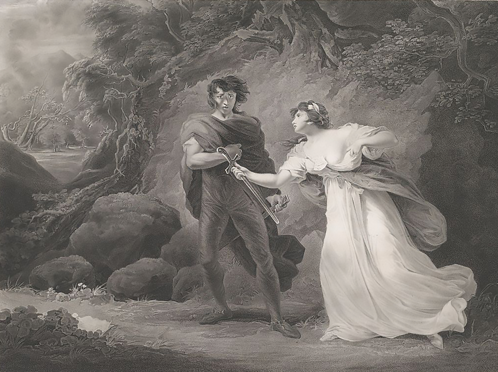
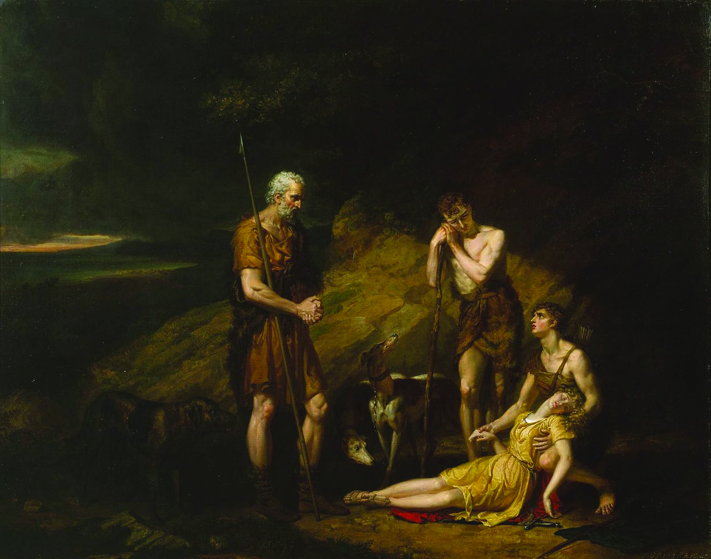

Dramatis Personae
Scene: Britain, Italy
|
Cymbeline, |
King of Britain |
|
Cloten, |
son to the Queen by a former husband |
|
Posthumus Leonatus, |
a gentleman, husband to Imogen |
|
Belarius, |
a banished lord, disguised under the name of Morgan |
|
Guiderius & Arviragus |
sons to Cymbeline, disguised under the names of Polydore and Cadwal, supposed sons to Belarius |
|
Philario, |
Italian, friend to Posthumus |
|
Iachimo, |
Italian, friend to Philario |
|
A French Gentleman, |
friend to Philario |
|
Caius Lucius |
General of the Roman Forces |
|
A Roman Captain |
|
|
Two British Captains |
|
|
Pisanio, |
servant to Posthumus |
|
Cornelius, |
a physician |
|
Two Lords, |
of Cymbeline’s court |
|
Two Gentlemen, |
of the same |
|
Two Gaolers |
|
|
Queen, |
wife to Cymbeline |
|
Imogen, |
daughter to Cymbeline by a former queen |
|
Helen, |
a lady attending on Imogen |
|
Apparitions |
|
|
Lords |
|
|
Ladies |
|
|
Roman Senators |
|
|
Tribunes |
|
|
A Soothsayer |
|
|
A Dutch Gentleman |
|
|
A Spanish Gentleman |
|
|
Musicians |
|
|
Officers |
|
|
Captains |
|
|
Soldiers |
|
|
Messengers |
|
|
Attendants |
|
Scene: Britain, Italy
Posthumus & Imogen

Act I
Scene I
Britain. The garden of Cymbeline’s palace
First Gentleman
You do not meet a man but frowns; our bloods
No more obey the heavens than our courtiers
Still seem as does the King’s
Second Gentleman
But what’s the matter?
First Gentleman
His daughter, and the heir of’s kingdom, whom
He purpos’d to his wife’s sole son- a widow
That late he married- hath referr’d herself
Unto a poor but worthy gentleman. She’s wedded;
Her husband banish’d; she imprison’d. All
Is outward sorrow, though I think the King
Be touch’d at very heart
Second Gentleman
None but the King?
First Gentleman
He that hath lost her too. So is the Queen,
That most desir’d the match. But not a courtier,
Although they wear their faces to the bent
Of the King’s looks, hath a heart that is not
Glad at the thing they scowl at
Second Gentleman
And why so?
First Gentleman
He that hath miss’d the Princess is a thing
Too bad for bad report; and he that hath her-
I mean that married her, alack, good man!
And therefore banish’d- is a creature such
As, to seek through the regions of the earth
For one his like, there would be something failing
In him that should compare. I do not think
So fair an outward and such stuff within
Endows a man but he
Second Gentleman
You speak him far
First Gentleman
I do extend him, sir, within himself;
Crush him together rather than unfold
His measure duly
Second Gentleman
What’s his name and birth?
First Gentleman
I cannot delve him to the root; his father
Was call’d Sicilius, who did join his honour
Against the Romans with Cassibelan,
But had his titles by Tenantius, whom
He serv’d with glory and admir’d success,
So gain’d the sur-addition Leonatus;
And had, besides this gentleman in question,
Two other sons, who, in the wars o’ th’ time,
Died with their swords in hand; for which their father,
Then old and fond of issue, took such sorrow
That he quit being; and his gentle lady,
Big of this gentleman, our theme, deceas’d
As he was born. The King he takes the babe
To his protection, calls him Posthumus Leonatus,
Breeds him and makes him of his bed-chamber,
Puts to him all the learnings that his time
Could make him the receiver of; which he took,
As we do air, fast as ‘twas minist’red,
And in’s spring became a harvest, liv’d in court-
Which rare it is to do- most prais’d, most lov’d,
A sample to the youngest; to th’ more mature
A glass that feated them; and to the graver
A child that guided dotards. To his mistress,
For whom he now is banish’d- her own price
Proclaims how she esteem’d him and his virtue;
By her election may be truly read
What kind of man he is
Second Gentleman
I honour him
Even out of your report. But pray you tell me,
Is she sole child to th’ King?
First Gentleman
His only child
He had two sons- if this be worth your hearing,
Mark it- the eldest of them at three years old,
I’ th’ swathing clothes the other, from their nursery
Were stol’n; and to this hour no guess in knowledge
Which way they went
Second Gentleman
How long is this ago?
First Gentleman
Some twenty years
Second Gentleman
That a king’s children should be so convey’d,
So slackly guarded, and the search so slow
That could not trace them!
First Gentleman
Howsoe’er ‘tis strange,
Or that the negligence may well be laugh’d at,
Yet is it true, sir
Second Gentleman
I do well believe you
First Gentleman
We must forbear; here comes the gentleman,
The Queen, and Princess.
Exeunt
Enter the Queen, Posthumus, and Imogen
Queen
No, be assur’d you shall not find me, daughter,
After the slander of most stepmothers,
Evil-ey’d unto you. You’re my prisoner, but
Your gaoler shall deliver you the keys
That lock up your restraint. For you, Posthumus,
So soon as I can win th’ offended King,
I will be known your advocate. Marry, yet
The fire of rage is in him, and ‘twere good
You lean’d unto his sentence with what patience
Your wisdom may inform you
Posthumus
Please your Highness,
I will from hence to-day
Queen
You know the peril
I’ll fetch a turn about the garden, pitying
The pangs of barr’d affections, though the King
Hath charg’d you should not speak together.
Exit
Imogen
O dissembling courtesy! How fine this tyrant
Can tickle where she wounds! My dearest husband,
I something fear my father’s wrath, but nothing-
Always reserv’d my holy duty- what
His rage can do on me. You must be gone;
And I shall here abide the hourly shot
Of angry eyes, not comforted to live
But that there is this jewel in the world
That I may see again
Posthumus
My queen! my mistress!
O lady, weep no more, lest I give cause
To be suspected of more tenderness
Than doth become a man. I will remain
The loyal’st husband that did e’er plight troth;
My residence in Rome at one Philario’s,
Who to my father was a friend, to me
Known but by letter; thither write, my queen,
And with mine eyes I’ll drink the words you send,
Though ink be made of gall
Re-enter Queen
Queen
Be brief, I pray you
If the King come, I shall incur I know not
How much of his displeasure [Aside] Yet I’ll move him
To walk this way. I never do him wrong
But he does buy my injuries, to be friends;
Pays dear for my offences.
Exit
Posthumus
Should we be taking leave
As long a term as yet we have to live,
The loathness to depart would grow. Adieu!
Imogen
Nay, stay a little
Were you but riding forth to air yourself,
Such parting were too petty. Look here, love:
This diamond was my mother’s; take it, heart;
But keep it till you woo another wife,
When Imogen is dead
Posthumus
How, how? Another?
You gentle gods, give me but this I have,
And sear up my embracements from a next
With bonds of death! Remain, remain thou here
[Puts on the ring]
While sense can keep it on. And, sweetest, fairest,
As I my poor self did exchange for you,
To your so infinite loss, so in our trifles
I still win of you. For my sake wear this;
It is a manacle of love; I’ll place it
Upon this fairest prisoner.
[Puts a bracelet on her arm]
Imogen
O the gods!
When shall we see again?
Enter Cymbeline and Lords
Posthumus
Alack, the King!
Cymbeline
Thou basest thing, avoid; hence from my sight
If after this command thou fraught the court
With thy unworthiness, thou diest. Away!
Thou’rt poison to my blood
Posthumus
The gods protect you,
And bless the good remainders of the court!
I am gone.
Exit
Imogen
There cannot be a pinch in death
More sharp than this is
Cymbeline
O disloyal thing,
That shouldst repair my youth, thou heap’st
A year’s age on me!
Imogen
I beseech you, sir,
Harm not yourself with your vexation
I am senseless of your wrath; a touch more rare
Subdues all pangs, all fears
Cymbeline
Past grace? obedience?
Imogen
Past hope, and in despair; that way past grace
Cymbeline
That mightst have had the sole son of my queen!
Imogen
O blessed that I might not! I chose an eagle,
And did avoid a puttock
Cymbeline
Thou took’st a beggar, wouldst have made my throne
A seat for baseness
Imogen
No; I rather added
A lustre to it
Cymbeline
O thou vile one!
Imogen
Sir,
It is your fault that I have lov’d Posthumus
You bred him as my playfellow, and he is
A man worth any woman; overbuys me
Almost the sum he pays
Cymbeline
What, art thou mad?
Imogen
Almost, sir. Heaven restore me! Would I were
A neat-herd’s daughter, and my Leonatus
Our neighbour shepherd’s son!
Re-enter Queen
Cymbeline
Thou foolish thing!
[To the Queen] They were again together. You have done
Not after our command. Away with her,
And pen her up
Queen
Beseech your patience.- Peace,
Dear lady daughter, peace!- Sweet sovereign,
Leave us to ourselves, and make yourself some comfort
Out of your best advice
Cymbeline
Nay, let her languish
A drop of blood a day and, being aged,
Die of this folly
Exit, with Lords
Enter Pisanio
Queen
Fie! you must give way
Here is your servant. How now, sir! What news?
Pisanio
My lord your son drew on my master
Queen
Ha!
No harm, I trust, is done?
Pisanio
There might have been,
But that my master rather play’d than fought,
And had no help of anger; they were parted
By gentlemen at hand
Queen
I am very glad on’t
Imogen
Your son’s my father’s friend; he takes his part
To draw upon an exile! O brave sir!
I would they were in Afric both together;
Myself by with a needle, that I might prick
The goer-back. Why came you from your master?
Pisanio
On his command. He would not suffer me
To bring him to the haven; left these notes
Of what commands I should be subject to,
When’t pleas’d you to employ me
Queen
This hath been
Your faithful servant. I dare lay mine honour
He will remain so
Pisanio
I humbly thank your Highness
Queen
Pray walk awhile
Imogen
About some half-hour hence,
Pray you speak with me. You shall at least
Go see my lord aboard. For this time leave me.
Exeunt
Scene II
Britain. A public place
Enter Cloten and two Lords
First Lord
Sir, I would advise you to shift a shirt; the violence
of action hath made you reek as a sacrifice. Where air comes out,
air comes in; there’s none abroad so wholesome as that you vent
Cloten
If my shirt were bloody, then to shift it. Have I hurt him?
Second Lord
Aside] No, faith; not so much as his patience
First Lord
Hurt him! His body’s a passable carcass if he be not
hurt. It is a throughfare for steel if it be not hurt
Second Lord
[Aside] His steel was in debt; it went o’ th’ back
side the town
Cloten
The villain would not stand me
Second Lord
[Aside] No; but he fled forward still, toward your
face
First Lord
Stand you? You have land enough of your own; but he
added to your having, gave you some ground
Second Lord
[Aside] As many inches as you have oceans
Puppies!
Cloten
I would they had not come between us
Second Lord
[Aside] So would I, till you had measur’d how long a
fool you were upon the ground
Cloten
And that she should love this fellow, and refuse me!
Second Lord
[Aside] If it be a sin to make a true election, she is
damn’d
First Lord
Sir, as I told you always, her beauty and her brain go
not together; she’s a good sign, but I have seen small reflection
of her wit
Second Lord
[Aside] She shines not upon fools, lest the reflection
should hurt her
Cloten
Come, I’ll to my chamber. Would there had been some hurt
done!
Second Lord
[Aside] I wish not so; unless it had been the fall of
an ass, which is no great hurt
Cloten
You’ll go with us?
First Lord
I’ll attend your lordship
Cloten
Nay, come, let’s go together
Second Lord
Well, my lord.
Exeunt
Scene III
Britain. Cymbeline’s palace
Enter Imogen and Pisanio
Imogen
I would thou grew’st unto the shores o’ th’ haven,
And questioned’st every sail; if he should write,
And I not have it, ‘twere a paper lost,
As offer’d mercy is. What was the last
That he spake to thee?
Pisanio
It was: his queen, his queen!
Imogen
Then wav’d his handkerchief?
Pisanio
And kiss’d it, madam
Imogen
Senseless linen, happier therein than I!
And that was all?
Pisanio
No, madam; for so long
As he could make me with his eye, or care
Distinguish him from others, he did keep
The deck, with glove, or hat, or handkerchief,
Still waving, as the fits and stirs of’s mind
Could best express how slow his soul sail’d on,
How swift his ship
Imogen
Thou shouldst have made him
As little as a crow, or less, ere left
To after-eye him
Pisanio
Madam, so I did
Imogen
I would have broke mine eyestrings, crack’d them but
To look upon him, till the diminution
Of space had pointed him sharp as my needle;
Nay, followed him till he had melted from
The smallness of a gnat to air, and then
Have turn’d mine eye and wept. But, good Pisanio,
When shall we hear from him?
Pisanio
Be assur’d, madam,
With his next vantage
Imogen
I did not take my leave of him, but had
Most pretty things to say. Ere I could tell him
How I would think on him at certain hours
Such thoughts and such; or I could make him swear
The shes of Italy should not betray
Mine interest and his honour; or have charg’d him,
At the sixth hour of morn, at noon, at midnight,
T’ encounter me with orisons, for then
I am in heaven for him; or ere I could
Give him that parting kiss which I had set
Betwixt two charming words, comes in my father,
And like the tyrannous breathing of the north
Shakes all our buds from growing
Enter a Lady
Lady
The Queen, madam,
Desires your Highness’ company
Imogen
Those things I bid you do, get them dispatch’d
I will attend the Queen
Pisanio
Madam, I shall
Exeunt
Scene IV
Rome. Philario’s house
Enter Philario, Iachimo, a Frenchman, a Dutchman, and a Spaniard
Iachimo
Believe it, sir, I have seen him in Britain. He was then
of a crescent note, expected to prove so worthy as since he hath
been allowed the name of. But I could then have look’d on him
without the help of admiration, though the catalogue of his
endowments had been tabled by his side, and I to peruse him by
items
Philario
You speak of him when he was less furnish’d than now he
is with that which makes him both without and within
Frenchman
I have seen him in France; we had very many there could
behold the sun with as firm eyes as he
Iachimo
This matter of marrying his king’s daughter, wherein he
must be weighed rather by her value than his own, words him, I
doubt not, a great deal from the matter
Frenchman
And then his banishment
Iachimo
Ay, and the approbation of those that weep this lamentable
divorce under her colours are wonderfully to extend him, be it
but to fortify her judgment, which else an easy battery might lay
flat, for taking a beggar, without less quality. But how comes it
he is to sojourn with you? How creeps acquaintance?
Philario
His father and I were soldiers together, to whom I have
been often bound for no less than my life
Enter Posthumus
Here comes the Briton. Let him be so entertained amongst you as
suits with gentlemen of your knowing to a stranger of his
quality. I beseech you all be better known to this gentleman,
whom I commend to you as a noble friend of mine. How worthy he is
I will leave to appear hereafter, rather than story him in his
own hearing
Frenchman
Sir, we have known together in Orleans
Posthumus
Since when I have been debtor to you for courtesies,
which I will be ever to pay and yet pay still
Frenchman
Sir, you o’errate my poor kindness. I was glad I did
atone my countryman and you; it had been pity you should have
been put together with so mortal a purpose as then each bore,
upon importance of so slight and trivial a nature
Posthumus
By your pardon, sir. I was then a young traveller;
rather shunn’d to go even with what I heard than in my every
action to be guided by others’ experiences; but upon my mended
judgment- if I offend not to say it is mended- my quarrel was not
altogether slight
Frenchman
Faith, yes, to be put to the arbitrement of swords, and
by such two that would by all likelihood have confounded one the
other or have fall’n both
Iachimo
Can we, with manners, ask what was the difference?
Frenchman
Safely, I think. ‘Twas a contention in public, which
may, without contradiction, suffer the report. It was much like
an argument that fell out last night, where each of us fell in
praise of our country mistresses; this gentleman at that time
vouching- and upon warrant of bloody affirmation- his to be more
fair, virtuous, wise, chaste, constant, qualified, and less
attemptable, than any the rarest of our ladies in France
Iachimo
That lady is not now living, or this gentleman’s opinion,
by this, worn out
Posthumus
She holds her virtue still, and I my mind
Iachimo
You must not so far prefer her fore ours of Italy
Posthumus
Being so far provok’d as I was in France, I would abate
her nothing, though I profess myself her adorer, not her friend
Iachimo
As fair and as good- a kind of hand-in-hand comparison-
had been something too fair and too good for any lady in Britain
If she went before others I have seen as that diamond of yours
outlustres many I have beheld, I could not but believe she
excelled many; but I have not seen the most precious diamond that
is, nor you the lady
Posthumus
I prais’d her as I rated her. So do I my stone
Iachimo
What do you esteem it at?
Posthumus
More than the world enjoys
Iachimo
Either your unparagon’d mistress is dead, or she’s
outpriz’d by a trifle
Posthumus
You are mistaken: the one may be sold or given, if there
were wealth enough for the purchase or merit for the gift; the
other is not a thing for sale, and only the gift of the gods
Iachimo
Which the gods have given you?
Posthumus
Which by their graces I will keep
Iachimo
You may wear her in title yours; but you know strange fowl
light upon neighbouring ponds. Your ring may be stol’n too. So
your brace of unprizable estimations, the one is but frail and
the other casual; a cunning thief, or a that-way-accomplish’d
courtier, would hazard the winning both of first and last
Posthumus
Your Italy contains none so accomplish’d a courtier to
convince the honour of my mistress, if in the holding or loss of
that you term her frail. I do nothing doubt you have store of
thieves; notwithstanding, I fear not my ring
Philario
Let us leave here, gentlemen
Posthumus
Sir, with all my heart. This worthy signior, I thank
him, makes no stranger of me; we are familiar at first
Iachimo
With five times so much conversation I should get ground
of your fair mistress; make her go back even to the yielding, had
I admittance and opportunity to friend
Posthumus
No, no
Iachimo
I dare thereupon pawn the moiety of my estate to your
ring, which, in my opinion, o’ervalues it something. But I make
my wager rather against your confidence than her reputation; and,
to bar your offence herein too, I durst attempt it against any
lady in the world
Posthumus
You are a great deal abus’d in too bold a persuasion,
and I doubt not you sustain what y’are worthy of by your attempt
Iachimo
What’s that?
Posthumus
A repulse; though your attempt, as you call it, deserve
more- a punishment too
Philario
Gentlemen, enough of this. It came in too suddenly; let
it die as it was born, and I pray you be better acquainted
Iachimo
Would I had put my estate and my neighbour’s on th’
approbation of what I have spoke!
Posthumus
What lady would you choose to assail?
Iachimo
Yours, whom in constancy you think stands so safe. I will
lay you ten thousand ducats to your ring that, commend me to the
court where your lady is, with no more advantage than the
opportunity of a second conference, and I will bring from thence
that honour of hers which you imagine so reserv’d
Posthumus
I will wage against your gold, gold to it. My ring I
hold dear as my finger; ‘tis part of it
Iachimo
You are a friend, and therein the wiser. If you buy
ladies’ flesh at a million a dram, you cannot preserve it from
tainting. But I see you have some religion in you, that you fear
Posthumus
This is but a custom in your tongue; you bear a graver
purpose, I hope
Iachimo
I am the master of my speeches, and would undergo what’s
spoken, I swear
Posthumus
Will you? I Shall but lend my diamond till your return
Let there be covenants drawn between’s. My mistress exceeds in
goodness the hugeness of your unworthy thinking. I dare you to
this match: here’s my ring
Philario
I will have it no lay
Iachimo
By the gods, it is one. If I bring you no sufficient
testimony that I have enjoy’d the dearest bodily part of your
mistress, my ten thousand ducats are yours; so is your diamond
too. If I come off, and leave her in such honour as you have
trust in, she your jewel, this your jewel, and my gold are yours-
provided I have your commendation for my more free entertainment
Posthumus
I embrace these conditions; let us have articles betwixt
us. Only, thus far you shall answer: if you make your voyage upon
her, and give me directly to understand you have prevail’d, I am
no further your enemy- she is not worth our debate; if she remain
unseduc’d, you not making it appear otherwise, for your ill
opinion and th’ assault you have made to her chastity you shall
answer me with your sword
Iachimo
Your hand- a covenant! We will have these things set down
by lawful counsel, and straight away for Britain, lest the
bargain should catch cold and starve. I will fetch my gold and
have our two wagers recorded
Posthumus
Agreed
Exeunt Posthumus and Iachimo
Frenchman
Will this hold, think you?
Philario
Signior Iachimo will not from it. Pray let us follow ‘em
Exeunt
Scene V
Britain. Cymbeline’s palace
Enter Queen, Ladies, and Cornelius
Queen
Whiles yet the dew’s on ground, gather those flowers;
Make haste; who has the note of them?
Lady
I, madam
Queen
Dispatch
Exeunt Ladies
Now, Master Doctor, have you brought those drugs?
Cornelius
Pleaseth your Highness, ay. Here they are, madam
[Presenting a box]
But I beseech your Grace, without offence-
My conscience bids me ask- wherefore you have
Commanded of me these most poisonous compounds
Which are the movers of a languishing death,
But, though slow, deadly?
Queen
I wonder, Doctor,
Thou ask’st me such a question. Have I not been
Thy pupil long? Hast thou not learn’d me how
To make perfumes? distil? preserve? yea, so
That our great king himself doth woo me oft
For my confections? Having thus far proceeded-
Unless thou think’st me devilish- is’t not meet
That I did amplify my judgment in
Other conclusions? I will try the forces
Of these thy compounds on such creatures as
We count not worth the hanging- but none human-
To try the vigour of them, and apply
Allayments to their act, and by them gather
Their several virtues and effects
Cornelius
Your Highness
Shall from this practice but make hard your heart;
Besides, the seeing these effects will be
Both noisome and infectious
Queen
O, content thee
Enter Pisanio
[Aside] Here comes a flattering rascal; upon him
Will I first work. He’s for his master,
An enemy to my son.- How now, Pisanio!
Doctor, your service for this time is ended;
Take your own way
Cornelius
[Aside ]I do suspect you, madam;
But you shall do no harm
Queen
[To Pisanio] Hark thee, a word
Cornelius
[Aside] I do not like her. She doth think she has
Strange ling’ring poisons. I do know her spirit,
And will not trust one of her malice with
A drug of such damn’d nature. Those she has
Will stupefy and dull the sense awhile,
Which first perchance she’ll prove on cats and dogs,
Then afterward up higher; but there is
No danger in what show of death it makes,
More than the locking up the spirits a time,
To be more fresh, reviving. She is fool’d
With a most false effect; and I the truer
So to be false with her
Queen
No further service, Doctor,
Until I send for thee
Cornelius
I humbly take my leave
Exit
Queen
Weeps she still, say’st thou? Dost thou think in time
She will not quench, and let instructions enter
Where folly now possesses? Do thou work
When thou shalt bring me word she loves my son,
I’ll tell thee on the instant thou art then
As great as is thy master; greater, for
His fortunes all lie speechless, and his name
Is at last gasp. Return he cannot, nor
Continue where he is. To shift his being
Is to exchange one misery with another,
And every day that comes comes comes to
A day’s work in him. What shalt thou expect
To be depender on a thing that leans,
Who cannot be new built, nor has no friends
So much as but to prop him?
[The Queen drops the box. Pisanio takes it up]
Thou tak’st up
Thou know’st not what; but take it for thy labour
It is a thing I made, which hath the King
Five times redeem’d from death. I do not know
What is more cordial. Nay, I prithee take it;
It is an earnest of a further good
That I mean to thee. Tell thy mistress how
The case stands with her; do’t as from thyself
Think what a chance thou changest on; but think
Thou hast thy mistress still; to boot, my son,
Who shall take notice of thee. I’ll move the King
To any shape of thy preferment, such
As thou’lt desire; and then myself, I chiefly,
That set thee on to this desert, am bound
To load thy merit richly. Call my women
Think on my words.
Exit Pisanio
A sly and constant knave,
Not to be shak’d; the agent for his master,
And the remembrancer of her to hold
The hand-fast to her lord. I have given him that
Which, if he take, shall quite unpeople her
Of leigers for her sweet; and which she after,
Except she bend her humour, shall be assur’d
To taste of too
Re-enter Pisanio and Ladies
So, so. Well done, well done
The violets, cowslips, and the primroses,
Bear to my closet. Fare thee well, Pisanio;
Think on my words
Exeunt Queen and Ladies
Pisanio
And shall do
But when to my good lord I prove untrue
I’ll choke myself- there’s all I’ll do for you
Exit
Scene VI
Britain. The palace
Enter Imogen alone
Imogen
A father cruel and a step-dame false;
A foolish suitor to a wedded lady
That hath her husband banish’d. O, that husband!
My supreme crown of grief! and those repeated
Vexations of it! Had I been thief-stol’n,
As my two brothers, happy! but most miserable
Is the desire that’s glorious. Blessed be those,
How mean soe’er, that have their honest wills,
Which seasons comfort. Who may this be? Fie!
Enter Pisanio and Iachimo
Pisanio
Madam, a noble gentleman of Rome
Comes from my lord with letters
Iachimo
Change you, madam?
The worthy Leonatus is in safety,
And greets your Highness dearly.
[Presents a letter]
Imogen
Thanks, good sir
You’re kindly welcome
Iachimo
[Aside] All of her that is out of door most rich!
If she be furnish’d with a mind so rare,
She is alone th’ Arabian bird, and I
Have lost the wager. Boldness be my friend!
Arm me, audacity, from head to foot!
Or, like the Parthian, I shall flying fight;
Rather, directly fly
Imogen
[Reads] ‘He is one of the noblest note, to whose
kindnesses I am most infinitely tied. Reflect upon him
accordingly, as you value your trust.Leonatus.’
So far I read aloud;
But even the very middle of my heart
Is warm’d by th’ rest and takes it thankfully
You are as welcome, worthy sir, as I
Have words to bid you; and shall find it so
In all that I can do
Iachimo
Thanks, fairest lady
What, are men mad? Hath nature given them eyes
To see this vaulted arch and the rich crop
Of sea and land, which can distinguish ‘twixt
The fiery orbs above and the twinn’d stones
Upon the number’d beach, and can we not
Partition make with spectacles so precious
‘Twixt fair and foul?
Imogen
What makes your admiration?
Iachimo
It cannot be i’ th’ eye, for apes and monkeys,
‘Twixt two such shes, would chatter this way and
Contemn with mows the other; nor i’ th’ judgment,
For idiots in this case of favour would
Be wisely definite; nor i’ th’ appetite;
Sluttery, to such neat excellence oppos’d,
Should make desire vomit emptiness,
Not so allur’d to feed
Imogen
What is the matter, trow?
Iachimo
The cloyed will-
That satiate yet unsatisfied desire, that tub
Both fill’d and running- ravening first the lamb,
Longs after for the garbage
Imogen
What, dear sir,
Thus raps you? Are you well?
Iachimo
Thanks, madam; well.- Beseech you, sir,
Desire my man’s abode where I did leave him
He’s strange and peevish
Pisanio
I was going, sir,
To give him welcome
Exit
Imogen
Continues well my lord? His health beseech you?
Iachimo
Well, madam
Imogen
Is he dispos’d to mirth? I hope he is
Iachimo
Exceeding pleasant; none a stranger there
So merry and so gamesome. He is call’d
The Britain reveller
Imogen
When he was here
He did incline to sadness, and oft-times
Not knowing why
Iachimo
I never saw him sad
There is a Frenchman his companion, one
An eminent monsieur that, it seems, much loves
A Gallian girl at home. He furnaces
The thick sighs from him; whiles the jolly Briton-
Your lord, I mean- laughs from’s free lungs, cries ‘O,
Can my sides hold, to think that man- who knows
By history, report, or his own proof,
What woman is, yea, what she cannot choose
But must be- will’s free hours languish for
Assured bondage?’
Imogen
Will my lord say so?
Iachimo
Ay, madam, with his eyes in flood with laughter
It is a recreation to be by
And hear him mock the Frenchman. But heavens know
Some men are much to blame
Imogen
Not he, I hope
Iachimo
Not he; but yet heaven’s bounty towards him might
Be us’d more thankfully. In himself, ‘tis much;
In you, which I account his, beyond all talents
Whilst I am bound to wonder, I am bound
To pity too
Imogen
What do you pity, sir?
Iachimo
Two creatures heartily
Imogen
Am I one, sir?
You look on me: what wreck discern you in me
Deserves your pity?
Iachimo
Lamentable! What,
To hide me from the radiant sun and solace
I’ th’ dungeon by a snuff?
Imogen
I pray you, sir,
Deliver with more openness your answers
To my demands. Why do you pity me?
Iachimo
That others do,
I was about to say, enjoy your- But
It is an office of the gods to venge it,
Not mine to speak on’t
Imogen
You do seem to know
Something of me, or what concerns me; pray you-
Since doubting things go ill often hurts more
Than to be sure they do; for certainties
Either are past remedies, or, timely knowing,
The remedy then born- discover to me
What both you spur and stop
Iachimo
Had I this cheek
To bathe my lips upon; this hand, whose touch,
Whose every touch, would force the feeler’s soul
To th’ oath of loyalty; this object, which
Takes prisoner the wild motion of mine eye,
Fixing it only here; should I, damn’d then,
Slaver with lips as common as the stairs
That mount the Capitol; join gripes with hands
Made hard with hourly falsehood- falsehood as
With labour; then by-peeping in an eye
Base and illustrious as the smoky light
That’s fed with stinking tallow- it were fit
That all the plagues of hell should at one time
Encounter such revolt
Imogen
My lord, I fear,
Has forgot Britain
Iachimo
And himself. Not I
Inclin’d to this intelligence pronounce
The beggary of his change; but ‘tis your graces
That from my mutest conscience to my tongue
Charms this report out
Imogen
Let me hear no more
Iachimo
O dearest soul, your cause doth strike my heart
With pity that doth make me sick! A lady
So fair, and fasten’d to an empery,
Would make the great’st king double, to be partner’d
With tomboys hir’d with that self exhibition
Which your own coffers yield! with diseas’d ventures
That play with all infirmities for gold
Which rottenness can lend nature! such boil’d stuff
As well might poison poison! Be reveng’d;
Or she that bore you was no queen, and you
Recoil from your great stock
Imogen
Reveng’d?
How should I be reveng’d? If this be true-
As I have such a heart that both mine ears
Must not in haste abuse- if it be true,
How should I be reveng’d?
Iachimo
Should he make me
Live like Diana’s priest betwixt cold sheets,
Whiles he is vaulting variable ramps,
In your despite, upon your purse? Revenge it
I dedicate myself to your sweet pleasure,
More noble than that runagate to your bed,
And will continue fast to your affection,
Still close as sure
Imogen
What ho, Pisanio!
Iachimo
Let me my service tender on your lips
Imogen
Away! I do condemn mine ears that have
So long attended thee. If thou wert honourable,
Thou wouldst have told this tale for virtue, not
For such an end thou seek’st, as base as strange
Thou wrong’st a gentleman who is as far
From thy report as thou from honour; and
Solicits here a lady that disdains
Thee and the devil alike.- What ho, Pisanio!-
The King my father shall be made acquainted
Of thy assault. If he shall think it fit
A saucy stranger in his court to mart
As in a Romish stew, and to expound
His beastly mind to us, he hath a court
He little cares for, and a daughter who
He not respects at all.- What ho, Pisanio!
Iachimo
O happy Leonatus! I may say
The credit that thy lady hath of thee
Deserves thy trust, and thy most perfect goodness
Her assur’d credit. Blessed live you long,
A lady to the worthiest sir that ever
Country call’d his! and you his mistress, only
For the most worthiest fit! Give me your pardon
I have spoke this to know if your affiance
Were deeply rooted, and shall make your lord
That which he is new o’er; and he is one
The truest manner’d, such a holy witch
That he enchants societies into him,
Half all men’s hearts are his
Imogen
You make amends
Iachimo
He sits ‘mongst men like a descended god:
He hath a kind of honour sets him of
More than a mortal seeming. Be not angry,
Most mighty Princess, that I have adventur’d
To try your taking of a false report, which hath
Honour’d with confirmation your great judgment
In the election of a sir so rare,
Which you know cannot err. The love I bear him
Made me to fan you thus; but the gods made you,
Unlike all others, chaffless. Pray your pardon
Imogen
All’s well, sir; take my pow’r i’ th’ court for yours
Iachimo
My humble thanks. I had almost forgot
T’ entreat your Grace but in a small request,
And yet of moment too, for it concerns
Your lord; myself and other noble friends
Are partners in the business
Imogen
Pray what is’t?
Iachimo
Some dozen Romans of us, and your lord-
The best feather of our wing- have mingled sums
To buy a present for the Emperor;
Which I, the factor for the rest, have done
In France. ‘Tis plate of rare device, and jewels
Of rich and exquisite form, their values great;
And I am something curious, being strange,
To have them in safe stowage. May it please you
To take them in protection?
Imogen
Willingly;
And pawn mine honour for their safety. Since
My lord hath interest in them, I will keep them
In my bedchamber
Iachimo
They are in a trunk,
Attended by my men. I will make bold
To send them to you only for this night;
I must aboard to-morrow
Imogen
O, no, no
Iachimo
Yes, I beseech; or I shall short my word
By length’ning my return. From Gallia
I cross’d the seas on purpose and on promise
To see your Grace
Imogen
I thank you for your pains
But not away to-morrow!
Iachimo
O, I must, madam
Therefore I shall beseech you, if you please
To greet your lord with writing, do’t to-night
I have outstood my time, which is material
‘To th’ tender of our present
Imogen
I will write
Send your trunk to me; it shall safe be kept
And truly yielded you. You’re very welcome.
Exeunt
Act II
Scene I
Britain. Before Cymbeline’s palace
Enter Cloten and the two Lords
Cloten
Was there ever man had such luck! When I kiss’d the jack,
upon an up-cast to be hit away! I had a hundred pound on’t; and
then a whoreson jackanapes must take me up for swearing, as if I
borrowed mine oaths of him, and might not spend them at my
pleasure
First Lord
What got he by that? You have broke his pate with your
bowl
Second Lord
[Aside] If his wit had been like him that broke it, it
would have run all out
Cloten
When a gentleman is dispos’d to swear, it is not for any
standers-by to curtail his oaths. Ha?
Second Lord
No, my lord; [Aside] nor crop the ears of them
Cloten
Whoreson dog! I give him satisfaction? Would he had been
one of my rank!
Second Lord
[Aside] To have smell’d like a fool
Cloten
I am not vex’d more at anything in th’ earth. A pox on’t! I
had rather not be so noble as I am; they dare not fight with me,
because of the Queen my mother. Every jackslave hath his bellyful
of fighting, and I must go up and down like a cock that nobody
can match
Second Lord
[Aside] You are cock and capon too; and you crow,
cock, with your comb on
Cloten
Sayest thou?
Second Lord
It is not fit your lordship should undertake every
companion that you give offence to
Cloten
No, I know that; but it is fit I should commit offence to
my inferiors
Second Lord
Ay, it is fit for your lordship only
Cloten
Why, so I say
First Lord
Did you hear of a stranger that’s come to court
to-night?
Cloten
A stranger, and I not known on’t?
Second Lord
[Aside] He’s a strange fellow himself, and knows it
not
First Lord
There’s an Italian come, and, ‘tis thought, one of
Leonatus’ friends
Cloten
Leonatus? A banish’d rascal; and he’s another, whatsoever
he be. Who told you of this stranger?
First Lord
One of your lordship’s pages
Cloten
Is it fit I went to look upon him? Is there no derogation
in’t?
Second Lord
You cannot derogate, my lord
Cloten
Not easily, I think
Second Lord
[Aside] You are a fool granted; therefore your issues,
being foolish, do not derogate
Cloten
Come, I’ll go see this Italian. What I have lost to-day at
bowls I’ll win to-night of him. Come, go
Second Lord
I’ll attend your lordship
Exeunt Cloten and First Lord
That such a crafty devil as is his mother
Should yield the world this ass! A woman that
Bears all down with her brain; and this her son
Cannot take two from twenty, for his heart,
And leave eighteen. Alas, poor princess,
Thou divine Imogen, what thou endur’st,
Betwixt a father by thy step-dame govern’d,
A mother hourly coining plots, a wooer
More hateful than the foul expulsion is
Of thy dear husband, than that horrid act
Of the divorce he’d make! The heavens hold firm
The walls of thy dear honour, keep unshak’d
That temple, thy fair mind, that thou mayst stand
T’ enjoy thy banish’d lord and this great land!
Exit
Scene II
Britain. Imogen’s bedchamber in Cymbeline’s palace; a trunk in one corner
Enter Imogen in her bed, and a Lady attending
Imogen
Who’s there? My woman? Helen?
Lady
Please you, madam
Imogen
What hour is it?
Lady
Almost midnight, madam
Imogen
I have read three hours then. Mine eyes are weak;
Fold down the leaf where I have left. To bed
Take not away the taper, leave it burning;
And if thou canst awake by four o’ th’ clock,
I prithee call me. Sleep hath seiz’d me wholly
Exit Lady
To your protection I commend me, gods
From fairies and the tempters of the night
Guard me, beseech ye!
[Sleeps. Iachimo comes from the trunk]
Iachimo
The crickets sing, and man’s o’er-labour’d sense
Repairs itself by rest. Our Tarquin thus
Did softly press the rushes ere he waken’d
The chastity he wounded. Cytherea,
How bravely thou becom’st thy bed! fresh lily,
And whiter than the sheets! That I might touch!
But kiss; one kiss! Rubies unparagon’d,
How dearly they do’t! ‘Tis her breathing that
Perfumes the chamber thus. The flame o’ th’ taper
Bows toward her and would under-peep her lids
To see th’ enclosed lights, now canopied
Under these windows white and azure, lac’d
With blue of heaven’s own tinct. But my design
To note the chamber. I will write all down:
Such and such pictures; there the window; such
Th’ adornment of her bed; the arras, figures-
Why, such and such; and the contents o’ th’ story
Ah, but some natural notes about her body
Above ten thousand meaner movables
Would testify, t’ enrich mine inventory
O sleep, thou ape of death, lie dull upon her!
And be her sense but as a monument,
Thus in a chapel lying! Come off, come off;
[Taking off her bracelet]
As slippery as the Gordian knot was hard!
‘Tis mine; and this will witness outwardly,
As strongly as the conscience does within,
To th’ madding of her lord. On her left breast
A mole cinque-spotted, like the crimson drops
I’ th’ bottom of a cowslip. Here’s a voucher
Stronger than ever law could make; this secret
Will force him think I have pick’d the lock and ta’en
The treasure of her honour. No more. To what end?
Why should I write this down that’s riveted,
Screw’d to my memory? She hath been reading late
The tale of Tereus; here the leaf’s turn’d down
Where Philomel gave up. I have enough
To th’ trunk again, and shut the spring of it
Swift, swift, you dragons of the night, that dawning
May bare the raven’s eye! I lodge in fear;
Though this a heavenly angel, hell is here.
[Clock strikes]
One, two, three. Time, time!
Exit into the trunk
Scene III
Cymbeline’s palace. An ante-chamber adjoining Imogen’s apartments
Enter Cloten and Lords
First Lord
Your lordship is the most patient man in loss, the most
coldest that ever turn’d up ace
Cloten
It would make any man cold to lose
First Lord
But not every man patient after the noble temper of
your lordship. You are most hot and furious when you win
Cloten
Winning will put any man into courage. If I could get this
foolish Imogen, I should have gold enough. It’s almost morning,
is’t not?
First Lord
Day, my lord
Cloten
I would this music would come. I am advised to give her
music a mornings; they say it will penetrate
Enter musicians
Come on, tune. If you can penetrate her with your fingering, so
We’ll try with tongue too. If none will do, let her remain; but
I’ll never give o’er. First, a very excellent good-conceited
thing; after, a wonderful sweet air, with admirable rich words to
it- and then let her consider
Song
Hark, hark! the lark at heaven’s gate sings,
And Phoebus ‘gins arise,
His steeds to water at those springs
On chalic’d flow’rs that lies;
And winking Mary-buds begin
To ope their golden eyes
With everything that pretty bin,
My lady sweet, arise;
Arise, arise!
So, get you gone. If this penetrate, I will consider your music
the better; if it do not, it is a vice in her ears which
horsehairs and calves’ guts, nor the voice of unpaved eunuch to
boot, can never amend
Exeunt musicians
Enter Cymbeline and Queen
Second Lord
Here comes the King
Cloten
I am glad I was up so late, for that’s the reason I was up
so early. He cannot choose but take this service I have done
fatherly.- Good morrow to your Majesty and to my gracious mother
Cymbeline
Attend you here the door of our stern daughter?
Will she not forth?
Cloten
I have assail’d her with musics, but she vouchsafes no
notice
Cymbeline
The exile of her minion is too new;
She hath not yet forgot him; some more time
Must wear the print of his remembrance out,
And then she’s yours
Queen
You are most bound to th’ King,
Who lets go by no vantages that may
Prefer you to his daughter. Frame yourself
To orderly soliciting, and be friended
With aptness of the season; make denials
Increase your services; so seem as if
You were inspir’d to do those duties which
You tender to her; that you in all obey her,
Save when command to your dismission tends,
And therein you are senseless
Cloten
Senseless? Not so
Enter a Messenger
Messenger
So like you, sir, ambassadors from Rome;
The one is Caius Lucius
Cymbeline
A worthy fellow,
Albeit he comes on angry purpose now;
But that’s no fault of his. We must receive him
According to the honour of his sender;
And towards himself, his goodness forespent on us,
We must extend our notice. Our dear son,
When you have given good morning to your mistress,
Attend the Queen and us; we shall have need
T’ employ you towards this Roman. Come, our queen
Exeunt all but Cloten
Cloten
If she be up, I’ll speak with her; if not,
Let her lie still and dream. By your leave, ho![Knocks]
I know her women are about her; what
If I do line one of their hands? ‘Tis gold
Which buys admittance; oft it doth-yea, and makes
Diana’s rangers false themselves, yield up
Their deer to th’ stand o’ th’ stealer; and ‘tis gold
Which makes the true man kill’d and saves the thief;
Nay, sometime hangs both thief and true man. What
Can it not do and undo? I will make
One of her women lawyer to me, for
I yet not understand the case myself
By your leave.[Knocks]
Enter a Lady
Lady
Who’s there that knocks?
Cloten
A gentleman
Lady
No more?
Cloten
Yes, and a gentlewoman’s son
Lady
That’s more
Than some whose tailors are as dear as yours
Can justly boast of. What’s your lordship’s pleasure?
Cloten
Your lady’s person; is she ready?
Lady
Ay,
To keep her chamber
Cloten
There is gold for you; sell me your good report
Lady
How? My good name? or to report of you
What I shall think is good? The Princess!
Enter Imogen
Cloten
Good morrow, fairest sister. Your sweet hand
Exit Lady
Imogen
Good morrow, sir. You lay out too much pains
For purchasing but trouble. The thanks I give
Is telling you that I am poor of thanks,
And scarce can spare them
Cloten
Still I swear I love you
Imogen
If you but said so, ‘twere as deep with me
If you swear still, your recompense is still
That I regard it not
Cloten
This is no answer
Imogen
But that you shall not say I yield, being silent,
I would not speak. I pray you spare me. Faith,
I shall unfold equal discourtesy
To your best kindness; one of your great knowing
Should learn, being taught, forbearance
Cloten
To leave you in your madness ‘twere my sin;
I will not
Imogen
Fools are not mad folks
Cloten
Do you call me fool?
Imogen
As I am mad, I do;
If you’ll be patient, I’ll no more be mad;
That cures us both. I am much sorry, sir,
You put me to forget a lady’s manners
By being so verbal; and learn now, for all,
That I, which know my heart, do here pronounce,
By th’ very truth of it, I care not for you,
And am so near the lack of charity
To accuse myself I hate you; which I had rather
You felt than make’t my boast
Cloten
You sin against
Obedience, which you owe your father. For
The contract you pretend with that base wretch,
One bred of alms and foster’d with cold dishes,
With scraps o’ th’ court- it is no contract, none
And though it be allowed in meaner parties-
Yet who than he more mean?- to knit their souls-
On whom there is no more dependency
But brats and beggary- in self-figur’d knot,
Yet you are curb’d from that enlargement by
The consequence o’ th’ crown, and must not foil
The precious note of it with a base slave,
A hilding for a livery, a squire’s cloth,
A pantler- not so eminent!
Imogen
Profane fellow!
Wert thou the son of Jupiter, and no more
But what thou art besides, thou wert too base
To be his groom. Thou wert dignified enough,
Even to the point of envy, if ‘twere made
Comparative for your virtues to be styl’d
The under-hangman of his kingdom, and hated
For being preferr’d so well
Cloten
The south fog rot him!
Imogen
He never can meet more mischance than come
To be but nam’d of thee. His mean’st garment
That ever hath but clipp’d his body is dearer
In my respect than all the hairs above thee,
Were they all made such men. How now, Pisanio!
Enter Pisanio
Cloten
‘His garments’! Now the devil-
Imogen
To Dorothy my woman hie thee presently
Cloten
‘His garment’!
Imogen
I am sprited with a fool;
Frighted, and ang’red worse. Go bid my woman
Search for a jewel that too casually
Hath left mine arm. It was thy master’s; shrew me,
If I would lose it for a revenue
Of any king’s in Europe! I do think
I saw’t this morning; confident I am
Last night ‘twas on mine arm; I kiss’d it
I hope it be not gone to tell my lord
That I kiss aught but he
Pisanio
‘Twill not be lost
Imogen
I hope so. Go and search
Exit Pisanio
Cloten
You have abus’d me
‘His meanest garment’!
Imogen
Ay, I said so, sir
If you will make ‘t an action, call witness to ‘t
Cloten
I will inform your father
Imogen
Your mother too
She’s my good lady and will conceive, I hope,
But the worst of me. So I leave you, sir,
To th’ worst of discontent
Exit
Cloten
I’ll be reveng’d
‘His mean’st garment’! Well
Exit
Scene IV
Rome. Philario’s house
Enter Posthumus and Philario
Posthumus
Fear it not, sir; I would I were so sure
To win the King as I am bold her honour
Will remain hers
Philario
What means do you make to him?
Posthumus
Not any; but abide the change of time,
Quake in the present winter’s state, and wish
That warmer days would come. In these fear’d hopes
I barely gratify your love; they failing,
I must die much your debtor
Philario
Your very goodness and your company
O’erpays all I can do. By this your king
Hath heard of great Augustus. Caius Lucius
Will do’s commission throughly; and I think
He’ll grant the tribute, send th’ arrearages,
Or look upon our Romans, whose remembrance
Is yet fresh in their grief
Posthumus
I do believe
Statist though I am none, nor like to be,
That this will prove a war; and you shall hear
The legions now in Gallia sooner landed
In our not-fearing Britain than have tidings
Of any penny tribute paid. Our countrymen
Are men more order’d than when Julius Caesar
Smil’d at their lack of skill, but found their courage
Worthy his frowning at. Their discipline,
Now mingled with their courages, will make known
To their approvers they are people such
That mend upon the world
Enter Iachimo
Philario
See! Iachimo!
Posthumus
The swiftest harts have posted you by land,
And winds of all the comers kiss’d your sails,
To make your vessel nimble
Philario
Welcome, sir
Posthumus
I hope the briefness of your answer made
The speediness of your return
Iachimo
Your lady
Is one of the fairest that I have look’d upon
Posthumus
And therewithal the best; or let her beauty
Look through a casement to allure false hearts,
And be false with them
Iachimo
Here are letters for you
Posthumus
Their tenour good, I trust
Iachimo
‘Tis very like
Philario
Was Caius Lucius in the Britain court
When you were there?
Iachimo
He was expected then,
But not approach’d
Posthumus
All is well yet
Sparkles this stone as it was wont, or is’t not
Too dull for your good wearing?
Iachimo
If I have lost it,
I should have lost the worth of it in gold
I’ll make a journey twice as far t’ enjoy
A second night of such sweet shortness which
Was mine in Britain; for the ring is won
Posthumus
The stone’s too hard to come by
Iachimo
Not a whit,
Your lady being so easy
Posthumus
Make not, sir,
Your loss your sport. I hope you know that we
Must not continue friends
Iachimo
Good sir, we must,
If you keep covenant. Had I not brought
The knowledge of your mistress home, I grant
We were to question farther; but I now
Profess myself the winner of her honour,
Together with your ring; and not the wronger
Of her or you, having proceeded but
By both your wills
Posthumus
If you can make’t apparent
That you have tasted her in bed, my hand
And ring is yours. If not, the foul opinion
You had of her pure honour gains or loses
Your sword or mine, or masterless leaves both
To who shall find them
Iachimo
Sir, my circumstances,
Being so near the truth as I will make them,
Must first induce you to believe- whose strength
I will confirm with oath; which I doubt not
You’ll give me leave to spare when you shall find
You need it not
Posthumus
Proceed
Iachimo
First, her bedchamber,
Where I confess I slept not, but profess
Had that was well worth watching-it was hang’d
With tapestry of silk and silver; the story,
Proud Cleopatra when she met her Roman
And Cydnus swell’d above the banks, or for
The press of boats or pride. A piece of work
So bravely done, so rich, that it did strive
In workmanship and value; which I wonder’d
Could be so rarely and exactly wrought,
Since the true life on’t was-
Posthumus
This is true;
And this you might have heard of here, by me
Or by some other
Iachimo
More particulars
Must justify my knowledge
Posthumus
So they must,
Or do your honour injury
Iachimo
The chimney
Is south the chamber, and the chimneypiece
Chaste Dian bathing. Never saw I figures
So likely to report themselves. The cutter
Was as another nature, dumb; outwent her,
Motion and breath left out
Posthumus
This is a thing
Which you might from relation likewise reap,
Being, as it is, much spoke of
Iachimo
The roof o’ th’ chamber
With golden cherubins is fretted; her andirons-
I had forgot them- were two winking Cupids
Of silver, each on one foot standing, nicely
Depending on their brands
Posthumus
This is her honour!
Let it be granted you have seen all this, and praise
Be given to your remembrance; the description
Of what is in her chamber nothing saves
The wager you have laid
Iachimo
Then, if you can,[Shows the bracelet]
Be pale. I beg but leave to air this jewel. See!
And now ‘tis up again. It must be married
To that your diamond; I’ll keep them
Posthumus
Jove!
Once more let me behold it. Is it that
Which I left with her?
Iachimo
Sir- I thank her- that
She stripp’d it from her arm; I see her yet;
Her pretty action did outsell her gift,
And yet enrich’d it too. She gave it me, and said
She priz’d it once
Posthumus
May be she pluck’d it of
To send it me
Iachimo
She writes so to you, doth she?
Posthumus
O, no, no, no! ‘tis true. Here, take this too;
[Gives the ring]
It is a basilisk unto mine eye,
Kills me to look on’t. Let there be no honour
Where there is beauty; truth where semblance; love
Where there’s another man. The vows of women
Of no more bondage be to where they are made
Than they are to their virtues, which is nothing
O, above measure false!
Philario
Have patience, sir,
And take your ring again; ‘tis not yet won
It may be probable she lost it, or
Who knows if one her women, being corrupted
Hath stol’n it from her?
Posthumus
Very true;
And so I hope he came by’t. Back my ring
Render to me some corporal sign about her,
More evident than this; for this was stol’n
Iachimo
By Jupiter, I had it from her arm!
Posthumus
Hark you, he swears; by Jupiter he swears
‘Tis true- nay, keep the ring, ‘tis true. I am sure
She would not lose it. Her attendants are
All sworn and honourable- they induc’d to steal it!
And by a stranger! No, he hath enjoy’d her
The cognizance of her incontinency
Is this: she hath bought the name of whore thus dearly
There, take thy hire; and all the fiends of hell
Divide themselves between you!
Philario
Sir, be patient;
This is not strong enough to be believ’d
Of one persuaded well of
Posthumus
Never talk on’t;
She hath been colted by him
Iachimo
If you seek
For further satisfying, under her breast-
Worthy the pressing- lies a mole, right proud
Of that most delicate lodging. By my life,
I kiss’d it; and it gave me present hunger
To feed again, though full. You do remember
This stain upon her?
Posthumus
Ay, and it doth confirm
Another stain, as big as hell can hold,
Were there no more but it
Iachimo
Will you hear more?
Posthumus
Spare your arithmetic; never count the turns
Once, and a million!
Iachimo
I’ll be sworn-
Posthumus
No swearing
If you will swear you have not done’t, you lie;
And I will kill thee if thou dost deny
Thou’st made me cuckold
Iachimo
I’ll deny nothing
Posthumus
O that I had her here to tear her limb-meal!
I will go there and do’t, i’ th’ court, before
Her father. I’ll do something-
Exit
Philario
Quite besides
The government of patience! You have won
Let’s follow him and pervert the present wrath
He hath against himself
Iachimo
With all my heart
Exeunt
Scene V
Rome. Another room in Philario’s house
Enter Posthumus
Posthumus
Is there no way for men to be, but women
Must be half-workers? We are all bastards,
And that most venerable man which I
Did call my father was I know not where
When I was stamp’d. Some coiner with his tools
Made me a counterfeit; yet my mother seem’d
The Dian of that time. So doth my wife
The nonpareil of this. O, vengeance, vengeance!
Me of my lawful pleasure she restrain’d,
And pray’d me oft forbearance; did it with
A pudency so rosy, the sweet view on’t
Might well have warm’d old Saturn; that I thought her
As chaste as unsunn’d snow. O, all the devils!
This yellow Iachimo in an hour- was’t not?
Or less!- at first? Perchance he spoke not, but,
Like a full-acorn’d boar, a German one,
Cried ‘O!’ and mounted; found no opposition
But what he look’d for should oppose and she
Should from encounter guard. Could I find out
The woman’s part in me! For there’s no motion
That tends to vice in man but I affirm
It is the woman’s part. Be it lying, note it,
The woman’s; flattering, hers; deceiving, hers;
Lust and rank thoughts, hers, hers; revenges, hers;
Ambitions, covetings, change of prides, disdain,
Nice longing, slanders, mutability,
All faults that man may name, nay, that hell knows,
Why, hers, in part or all; but rather all;
For even to vice
They are not constant, but are changing still
One vice but of a minute old for one
Not half so old as that. I’ll write against them,
Detest them, curse them. Yet ‘tis greater skill
In a true hate to pray they have their will:
The very devils cannot plague them better.
Exit
Act III
Scene I
Britain. A hall in Cymbeline’s palace
Enter in state, Cymbeline, Queen, Cloten, and Lords at one door, and at another Caius Lucius and attendants
Cymbeline
Now say, what would Augustus Caesar with us?
Lucius
When Julius Caesar- whose remembrance yet
Lives in men’s eyes, and will to ears and tongues
Be theme and hearing ever- was in this Britain,
And conquer’d it, Cassibelan, thine uncle,
Famous in Caesar’s praises no whit less
Than in his feats deserving it, for him
And his succession granted Rome a tribute,
Yearly three thousand pounds, which by thee lately
Is left untender’d
Queen
And, to kill the marvel,
Shall be so ever
Cloten
There be many Caesars
Ere such another Julius. Britain is
A world by itself, and we will nothing pay
For wearing our own noses
Queen
That opportunity,
Which then they had to take from ‘s, to resume
We have again. Remember, sir, my liege,
The kings your ancestors, together with
The natural bravery of your isle, which stands
As Neptune’s park, ribb’d and pal’d in
With rocks unscalable and roaring waters,
With sands that will not bear your enemies’ boats
But suck them up to th’ top-mast. A kind of conquest
Caesar made here; but made not here his brag
Of ‘came, and saw, and overcame.’ With shame-
The first that ever touch’d him- he was carried
From off our coast, twice beaten; and his shipping-
Poor ignorant baubles!- on our terrible seas,
Like egg-shells mov’d upon their surges, crack’d
As easily ‘gainst our rocks; for joy whereof
The fam’d Cassibelan, who was once at point-
O, giglot fortune!- to master Caesar’s sword,
Made Lud’s Town with rejoicing fires bright
And Britons strut with courage
Cloten
Come, there’s no more tribute to be paid. Our kingdom is
stronger than it was at that time; and, as I said, there is no
moe such Caesars. Other of them may have crook’d noses; but to
owe such straight arms, none
Cymbeline
Son, let your mother end
Cloten
We have yet many among us can gripe as hard as Cassibelan
I do not say I am one; but I have a hand. Why tribute? Why should
we pay tribute? If Caesar can hide the sun from us with a blanket,
or put the moon in his pocket, we will pay him tribute for light;
else, sir, no more tribute, pray you now
Cymbeline
You must know,
Till the injurious Romans did extort
This tribute from us, we were free. Caesar’s ambition-
Which swell’d so much that it did almost stretch
The sides o’ th’ world- against all colour here
Did put the yoke upon’s; which to shake of
Becomes a warlike people, whom we reckon
Ourselves to be
Cloten
We do
Cymbeline
Say then to Caesar,
Our ancestor was that Mulmutius which
Ordain’d our laws- whose use the sword of Caesar
Hath too much mangled; whose repair and franchise
Shall, by the power we hold, be our good deed,
Though Rome be therefore angry. Mulmutius made our laws,
Who was the first of Britain which did put
His brows within a golden crown, and call’d
Himself a king
Lucius
I am sorry, Cymbeline,
That I am to pronounce Augustus Caesar-
Caesar, that hath moe kings his servants than
Thyself domestic officers- thine enemy
Receive it from me, then: war and confusion
In Caesar’s name pronounce I ‘gainst thee; look
For fury not to be resisted. Thus defied,
I thank thee for myself
Cymbeline
Thou art welcome, Caius
Thy Caesar knighted me; my youth I spent
Much under him; of him I gather’d honour,
Which he to seek of me again, perforce,
Behoves me keep at utterance. I am perfect
That the Pannonians and Dalmatians for
Their liberties are now in arms, a precedent
Which not to read would show the Britons cold;
So Caesar shall not find them
Lucius
Let proof speak
Cloten
His majesty bids you welcome. Make pastime with us a day or
two, or longer. If you seek us afterwards in other terms, you
shall find us in our salt-water girdle. If you beat us out of it,
it is yours; if you fall in the adventure, our crows shall fare
the better for you; and there’s an end
Lucius
So, sir
Cymbeline
I know your master’s pleasure, and he mine;
All the remain is, welcome
Exeunt
Scene II
Britain. Another room in Cymbeline’s palace
Enter Pisanio reading of a letter
Pisanio
How? of adultery? Wherefore write you not
What monsters her accuse? Leonatus!
O master, what a strange infection
Is fall’n into thy ear! What false Italian-
As poisonous-tongu’d as handed- hath prevail’d
On thy too ready hearing? Disloyal? No
She’s punish’d for her truth, and undergoes,
More goddess-like than wife-like, such assaults
As would take in some virtue. O my master!
Thy mind to her is now as low as were
Thy fortunes. How? that I should murder her?
Upon the love, and truth, and vows, which I
Have made to thy command? I, her? Her blood?
If it be so to do good service, never
Let me be counted serviceable. How look I
That I should seem to lack humanity
So much as this fact comes to? [Reads] ‘Do’t. The letter
That I have sent her, by her own command
Shall give thee opportunity.’ O damn’d paper,
Black as the ink that’s on thee! Senseless bauble,
Art thou a fedary for this act, and look’st
So virgin-like without? Lo, here she comes
Enter Imogen
I am ignorant in what I am commanded
Imogen
How now, Pisanio!
Pisanio
Madam, here is a letter from my lord
Imogen
Who? thy lord? That is my lord- Leonatus?
O, learn’d indeed were that astronomer
That knew the stars as I his characters-
He’d lay the future open. You good gods,
Let what is here contain’d relish of love,
Of my lord’s health, of his content; yet not
That we two are asunder- let that grieve him!
Some griefs are med’cinable; that is one of them,
For it doth physic love- of his content,
All but in that. Good wax, thy leave. Blest be
You bees that make these locks of counsel! Lovers
And men in dangerous bonds pray not alike;
Though forfeiters you cast in prison, yet
You clasp young Cupid’s tables. Good news, gods!
[Reads]
‘Justice and your father’s wrath, should he take me in his
dominion, could not be so cruel to me as you, O the dearest of
creatures, would even renew me with your eyes. Take notice that I
am in Cambria, at Milford Haven. What your own love will out of
this advise you, follow. So he wishes you all happiness that
remains loyal to his vow, and your increasing in love
Leonatus Posthumus.’
O for a horse with wings! Hear’st thou, Pisanio?
He is at Milford Haven. Read, and tell me
How far ‘tis thither. If one of mean affairs
May plod it in a week, why may not I
Glide thither in a day? Then, true Pisanio-
Who long’st like me to see thy lord, who long’st-
O, let me ‘bate!- but not like me, yet long’st,
But in a fainter kind- O, not like me,
For mine’s beyond beyond!-say, and speak thick-
Love’s counsellor should fill the bores of hearing
To th’ smothering of the sense- how far it is
To this same blessed Milford. And by th’ way
Tell me how Wales was made so happy as
T’ inherit such a haven. But first of all,
How we may steal from hence; and for the gap
That we shall make in time from our hence-going
And our return, to excuse. But first, how get hence
Why should excuse be born or ere begot?
We’ll talk of that hereafter. Prithee speak,
How many score of miles may we well ride
‘Twixt hour and hour?
Pisanio
One score ‘twixt sun and sun,
Madam, ‘s enough for you, and too much too
Imogen
Why, one that rode to’s execution, man,
Could never go so slow. I have heard of riding wagers
Where horses have been nimbler than the sands
That run i’ th’ clock’s behalf. But this is fool’ry
Go bid my woman feign a sickness; say
She’ll home to her father; and provide me presently
A riding suit, no costlier than would fit
A franklin’s huswife
Pisanio
Madam, you’re best consider
Imogen
I see before me, man. Nor here, nor here,
Nor what ensues, but have a fog in them
That I cannot look through. Away, I prithee;
Do as I bid thee. There’s no more to say;
Accessible is none but Milford way
Exeunt
Scene III
Wales. A mountainous country with a cave
Enter from the cave Belarius, Guiderius, and Arviragus
Belarius
A goodly day not to keep house with such
Whose roof’s as low as ours! Stoop, boys; this gate
Instructs you how t’ adore the heavens, and bows you
To a morning’s holy office. The gates of monarchs
Are arch’d so high that giants may jet through
And keep their impious turbans on without
Good morrow to the sun. Hail, thou fair heaven!
We house i’ th’ rock, yet use thee not so hardly
As prouder livers do
Guiderius
Hail, heaven!
Arviragus
Hail, heaven!
Belarius
Now for our mountain sport. Up to yond hill,
Your legs are young; I’ll tread these flats. Consider,
When you above perceive me like a crow,
That it is place which lessens and sets off;
And you may then revolve what tales I have told you
Of courts, of princes, of the tricks in war
This service is not service so being done,
But being so allow’d. To apprehend thus
Draws us a profit from all things we see,
And often to our comfort shall we find
The sharded beetle in a safer hold
Than is the full-wing’d eagle. O, this life
Is nobler than attending for a check,
Richer than doing nothing for a bribe,
Prouder than rustling in unpaid-for silk:
Such gain the cap of him that makes him fine,
Yet keeps his book uncross’d. No life to ours!
Guiderius
Out of your proof you speak. We, poor unfledg’d,
Have never wing’d from view o’ th’ nest, nor know not
What air’s from home. Haply this life is best,
If quiet life be best; sweeter to you
That have a sharper known; well corresponding
With your stiff age. But unto us it is
A cell of ignorance, travelling abed,
A prison for a debtor that not dares
To stride a limit
Arviragus
What should we speak of
When we are old as you? When we shall hear
The rain and wind beat dark December, how,
In this our pinching cave, shall we discourse
The freezing hours away? We have seen nothing;
We are beastly: subtle as the fox for prey,
Like warlike as the wolf for what we eat
Our valour is to chase what flies; our cage
We make a choir, as doth the prison’d bird,
And sing our bondage freely
Belarius
How you speak!
Did you but know the city’s usuries,
And felt them knowingly- the art o’ th’ court,
As hard to leave as keep, whose top to climb
Is certain falling, or so slipp’ry that
The fear’s as bad as falling; the toil o’ th’ war,
A pain that only seems to seek out danger
I’ th’name of fame and honour, which dies i’ th’search,
And hath as oft a sland’rous epitaph
As record of fair act; nay, many times,
Doth ill deserve by doing well; what’s worse-
Must curtsy at the censure. O, boys, this story
The world may read in me; my body’s mark’d
With Roman swords, and my report was once
first with the best of note. Cymbeline lov’d me;
And when a soldier was the theme, my name
Was not far off. Then was I as a tree
Whose boughs did bend with fruit; but in one night
A storm, or robbery, call it what you will,
Shook down my mellow hangings, nay, my leaves,
And left me bare to weather
Guiderius
Uncertain favour!
Belarius
My fault being nothing- as I have told you oft-
But that two villains, whose false oaths prevail’d
Before my perfect honour, swore to Cymbeline
I was confederate with the Romans. So
Follow’d my banishment, and this twenty years
This rock and these demesnes have been my world,
Where I have liv’d at honest freedom, paid
More pious debts to heaven than in all
The fore-end of my time. But up to th’ mountains!
This is not hunters’ language. He that strikes
The venison first shall be the lord o’ th’ feast;
To him the other two shall minister;
And we will fear no poison, which attends
In place of greater state. I’ll meet you in the valleys
Exeunt Guiderius and Arviragus
How hard it is to hide the sparks of nature!
These boys know little they are sons to th’ King,
Nor Cymbeline dreams that they are alive
They think they are mine; and though train’d up thus meanly
I’ th’ cave wherein they bow, their thoughts do hit
The roofs of palaces, and nature prompts them
In simple and low things to prince it much
Beyond the trick of others. This Polydore,
The heir of Cymbeline and Britain, who
The King his father call’d Guiderius- Jove!
When on my three-foot stool I sit and tell
The warlike feats I have done, his spirits fly out
Into my story; say ‘Thus mine enemy fell,
And thus I set my foot on’s neck’; even then
The princely blood flows in his cheek, he sweats,
Strains his young nerves, and puts himself in posture
That acts my words. The younger brother, Cadwal,
Once Arviragus, in as like a figure
Strikes life into my speech, and shows much more
His own conceiving. Hark, the game is rous’d!
O Cymbeline, heaven and my conscience knows
Thou didst unjustly banish me! Whereon,
At three and two years old, I stole these babes,
Thinking to bar thee of succession as
Thou refts me of my lands. Euriphile,
Thou wast their nurse; they took thee for their mother,
And every day do honour to her grave
Myself, Belarius, that am Morgan call’d,
They take for natural father. The game is up.
Exit
Scene IV
Wales, near Milford Haven
Enter Pisanio and Imogen
Imogen
Thou told’st me, when we came from horse, the place
Was near at hand. Ne’er long’d my mother so
To see me first as I have now. Pisanio! Man!
Where is Posthumus? What is in thy mind
That makes thee stare thus? Wherefore breaks that sigh
From th’ inward of thee? One but painted thus
Would be interpreted a thing perplex’d
Beyond self-explication. Put thyself
Into a haviour of less fear, ere wildness
Vanquish my staider senses. What’s the matter?
Why tender’st thou that paper to me with
A look untender! If’t be summer news,
Smile to’t before; if winterly, thou need’st
But keep that count’nance still. My husband’s hand?
That drug-damn’d Italy hath out-craftied him,
And he’s at some hard point. Speak, man; thy tongue
May take off some extremity, which to read
Would be even mortal to me
Pisanio
Please you read,
And you shall find me, wretched man, a thing
The most disdain’d of fortune
Imogen
[Reads] ‘Thy mistress, Pisanio, hath play’d the strumpet in
my bed, the testimonies whereof lie bleeding in me. I speak not
out of weak surmises, but from proof as strong as my grief and as
certain as I expect my revenge. That part thou, Pisanio, must act
for me, if thy faith be not tainted with the breach of hers. Let
thine own hands take away her life; I shall give thee opportunity
at Milford Haven; she hath my letter for the purpose; where, if
thou fear to strike, and to make me certain it is done, thou art
the pander to her dishonour, and equally to me disloyal.’
Pisanio
What shall I need to draw my sword? The paper
Hath cut her throat already. No, ‘tis slander,
Whose edge is sharper than the sword, whose tongue
Outvenoms all the worms of Nile, whose breath
Rides on the posting winds and doth belie
All corners of the world. Kings, queens, and states,
Maids, matrons, nay, the secrets of the grave,
This viperous slander enters. What cheer, madam?
Imogen
False to his bed? What is it to be false?
To lie in watch there, and to think on him?
To weep twixt clock and clock? If sleep charge nature,
To break it with a fearful dream of him,
And cry myself awake? That’s false to’s bed,
Is it?
Pisanio
Alas, good lady!
Imogen
I false! Thy conscience witness! Iachimo,
Thou didst accuse him of incontinency;
Thou then look’dst like a villain; now, methinks,
Thy favour’s good enough. Some jay of Italy,
Whose mother was her painting, hath betray’d him
Poor I am stale, a garment out of fashion,
And for I am richer than to hang by th’ walls
I must be ripp’d. To pieces with me! O,
Men’s vows are women’s traitors! All good seeming,
By thy revolt, O husband, shall be thought
Put on for villainy; not born where’t grows,
But worn a bait for ladies
Pisanio
Good madam, hear me
Imogen
True honest men being heard, like false Aeneas,
Were, in his time, thought false; and Sinon’s weeping
Did scandal many a holy tear, took pity
From most true wretchedness. So thou, Posthumus,
Wilt lay the leaven on all proper men:
Goodly and gallant shall be false and perjur’d
From thy great fail. Come, fellow, be thou honest;
Do thou thy master’s bidding; when thou seest him,
A little witness my obedience. Look!
I draw the sword myself; take it, and hit
The innocent mansion of my love, my heart
Fear not; ‘tis empty of all things but grief;
Thy master is not there, who was indeed
The riches of it. Do his bidding; strike
Thou mayst be valiant in a better cause,
But now thou seem’st a coward
Pisanio
Hence, vile instrument!
Thou shalt not damn my hand
Imogen
Why, I must die;
And if I do not by thy hand, thou art
No servant of thy master’s. Against self-slaughter
There is a prohibition so divine
That cravens my weak hand. Come, here’s my heart-
Something’s afore’t. Soft, soft! we’ll no defence!-
Obedient as the scabbard. What is here?
The scriptures of the loyal Leonatus
All turn’d to heresy? Away, away,
Corrupters of my faith! you shall no more
Be stomachers to my heart. Thus may poor fools
Believe false teachers; though those that are betray’d
Do feel the treason sharply, yet the traitor
Stands in worse case of woe. And thou, Posthumus,
That didst set up my disobedience ‘gainst the King
My father, and make me put into contempt the suits
Of princely fellows, shalt hereafter find
It is no act of common passage but
A strain of rareness; and I grieve myself
To think, when thou shalt be disedg’d by her
That now thou tirest on, how thy memory
Will then be pang’d by me. Prithee dispatch
The lamp entreats the butcher. Where’s thy knife?
Thou art too slow to do thy master’s bidding,
When I desire it too
Pisanio
O gracious lady,
Since I receiv’d command to do this busines
I have not slept one wink
Imogen
Do’t, and to bed then
Pisanio
I’ll wake mine eyeballs first
Imogen
Wherefore then
Didst undertake it? Why hast thou abus’d
So many miles with a pretence? This place?
Mine action and thine own? our horses’ labour?
The time inviting thee? the perturb’d court,
For my being absent?- whereunto I never
Purpose return. Why hast thou gone so far
To be unbent when thou hast ta’en thy stand,
Th’ elected deer before thee?
Pisanio
But to win time
To lose so bad employment, in the which
I have consider’d of a course. Good lady,
Hear me with patience
Imogen
Talk thy tongue weary- speak
I have heard I am a strumpet, and mine ear,
Therein false struck, can take no greater wound,
Nor tent to bottom that. But speak
Pisanio
Then, madam,
I thought you would not back again
Imogen
Most like-
Bringing me here to kill me
Pisanio
Not so, neither;
But if I were as wise as honest, then
My purpose would prove well. It cannot be
But that my master is abus’d. Some villain,
Ay, and singular in his art, hath done you both
This cursed injury
Imogen
Some Roman courtezan!
Pisanio
No, on my life!
I’ll give but notice you are dead, and send him
Some bloody sign of it, for ‘tis commanded
I should do so. You shall be miss’d at court,
And that will well confirm it
Imogen
Why, good fellow,
What shall I do the while? where bide? how live?
Or in my life what comfort, when I am
Dead to my husband?
Pisanio
If you’ll back to th’ court-
Imogen
No court, no father, nor no more ado
With that harsh, noble, simple nothing-
That Cloten, whose love-suit hath been to me
As fearful as a siege
Pisanio
If not at court,
Then not in Britain must you bide
Imogen
Where then?
Hath Britain all the sun that shines? Day, night,
Are they not but in Britain? I’ th’ world’s volume
Our Britain seems as of it, but not in’t;
In a great pool a swan’s nest. Prithee think
There’s livers out of Britain
Pisanio
I am most glad
You think of other place. Th’ ambassador,
Lucius the Roman, comes to Milford Haven
To-morrow. Now, if you could wear a mind
Dark as your fortune is, and but disguise
That which t’ appear itself must not yet be
But by self-danger, you should tread a course
Pretty and full of view; yea, happily, near
The residence of Posthumus; so nigh, at least,
That though his actions were not visible, yet
Report should render him hourly to your ear
As truly as he moves
Imogen
O! for such means,
Though peril to my modesty, not death on’t,
I would adventure
Pisanio
Well then, here’s the point:
You must forget to be a woman; change
Command into obedience; fear and niceness-
The handmaids of all women, or, more truly,
Woman it pretty self- into a waggish courage;
Ready in gibes, quick-answer’d, saucy, and
As quarrelous as the weasel. Nay, you must
Forget that rarest treasure of your cheek,
Exposing it- but, O, the harder heart!
Alack, no remedy!- to the greedy touch
Of common-kissing Titan, and forget
Your laboursome and dainty trims wherein
You made great Juno angry
Imogen
Nay, be brief;
I see into thy end, and am almost
A man already
Pisanio
First, make yourself but like one
Fore-thinking this, I have already fit-
‘Tis in my cloak-bag- doublet, hat, hose, all
That answer to them. Would you, in their serving,
And with what imitation you can borrow
From youth of such a season, fore noble Lucius
Present yourself, desire his service, tell him
Wherein you’re happy- which will make him know
If that his head have ear in music; doubtless
With joy he will embrace you; for he’s honourable,
And, doubling that, most holy. Your means abroad-
You have me, rich; and I will never fail
Beginning nor supplyment
Imogen
Thou art all the comfort
The gods will diet me with. Prithee away!
There’s more to be consider’d; but we’ll even
All that good time will give us. This attempt
I am soldier to, and will abide it with
A prince’s courage. Away, I prithee
Pisanio
Well, madam, we must take a short farewell,
Lest, being miss’d, I be suspected of
Your carriage from the court. My noble mistress,
Here is a box; I had it from the Queen
What’s in’t is precious. If you are sick at sea
Or stomach-qualm’d at land, a dram of this
Will drive away distemper. To some shade,
And fit you to your manhood. May the gods
Direct you to the best!
Imogen
Amen. I thank thee.
Exeunt severally
Scene V
Britain. Cymbeline’s palace
Enter Cymbeline, Queen, Cloten, Lucius, and Lords
Cymbeline
Thus far; and so farewell
Lucius
Thanks, royal sir
My emperor hath wrote; I must from hence,
And am right sorry that I must report ye
My master’s enemy
Cymbeline
Our subjects, sir,
Will not endure his yoke; and for ourself
To show less sovereignty than they, must needs
Appear unkinglike
Lucius
So, sir. I desire of you
A conduct overland to Milford Haven
Madam, all joy befall your Grace, and you!
Cymbeline
My lords, you are appointed for that office;
The due of honour in no point omit
So farewell, noble Lucius
Lucius
Your hand, my lord
Cloten
Receive it friendly; but from this time forth
I wear it as your enemy
Lucius
Sir, the event
Is yet to name the winner. Fare you well
Cymbeline
Leave not the worthy Lucius, good my lords,
Till he have cross’d the Severn. Happiness!
Exeunt Lucius and Lords
Queen
He goes hence frowning; but it honours us
That we have given him cause
Cloten
‘Tis all the better;
Your valiant Britons have their wishes in it
Cymbeline
Lucius hath wrote already to the Emperor
How it goes here. It fits us therefore ripely
Our chariots and our horsemen be in readiness
The pow’rs that he already hath in Gallia
Will soon be drawn to head, from whence he moves
His war for Britain
Queen
‘Tis not sleepy business,
But must be look’d to speedily and strongly
Cymbeline
Our expectation that it would be thus
Hath made us forward. But, my gentle queen,
Where is our daughter? She hath not appear’d
Before the Roman, nor to us hath tender’d
The duty of the day. She looks us like
A thing more made of malice than of duty;
We have noted it. Call her before us, for
We have been too slight in sufferance.Exit a Messenger
Queen
Royal sir,
Since the exile of Posthumus, most retir’d
Hath her life been; the cure whereof, my lord,
‘Tis time must do. Beseech your Majesty,
Forbear sharp speeches to her; she’s a lady
So tender of rebukes that words are strokes,
And strokes death to her
Re-enter Messenger
Cymbeline
Where is she, sir? How
Can her contempt be answer’d?
Messenger
Please you, sir,
Her chambers are all lock’d, and there’s no answer
That will be given to th’ loud of noise we make
Queen
My lord, when last I went to visit her,
She pray’d me to excuse her keeping close;
Whereto constrain’d by her infirmity
She should that duty leave unpaid to you
Which daily she was bound to proffer. This
She wish’d me to make known; but our great court
Made me to blame in memory
Cymbeline
Her doors lock’d?
Not seen of late? Grant, heavens, that which I fear
Prove false!
Exit
Queen
Son, I say, follow the King
Cloten
That man of hers, Pisanio, her old servant,
I have not seen these two days
Queen
Go, look after
Exit Cloten
Pisanio, thou that stand’st so for Posthumus!
He hath a drug of mine. I pray his absence
Proceed by swallowing that; for he believes
It is a thing most precious. But for her,
Where is she gone? Haply despair hath seiz’d her;
Or, wing’d with fervour of her love, she’s flown
To her desir’d Posthumus. Gone she is
To death or to dishonour, and my end
Can make good use of either. She being down,
I have the placing of the British crown
Re-enter Cloten
How now, my son?
Cloten
‘Tis certain she is fled
Go in and cheer the King. He rages; none
Dare come about him
Queen
All the better. May
This night forestall him of the coming day!Exit
Cloten
I love and hate her; for she’s fair and royal,
And that she hath all courtly parts more exquisite
Than lady, ladies, woman. From every one
The best she hath, and she, of all compounded,
Outsells them all. I love her therefore; but
Disdaining me and throwing favours on
The low Posthumus slanders so her judgment
That what’s else rare is chok’d; and in that point
I will conclude to hate her, nay, indeed,
To be reveng’d upon her. For when fools
Shall-
Enter Pisanio
Who is here? What, are you packing, sirrah?
Come hither. Ah, you precious pander! Villain,
Where is thy lady? In a word, or else
Thou art straightway with the fiends
Pisanio
O good my lord!
Cloten
Where is thy lady? or, by Jupiter-
I will not ask again. Close villain,
I’ll have this secret from thy heart, or rip
Thy heart to find it. Is she with Posthumus?
From whose so many weights of baseness cannot
A dram of worth be drawn
Pisanio
Alas, my lord,
How can she be with him? When was she miss’d?
He is in Rome
Cloten
Where is she, sir? Come nearer
No farther halting! Satisfy me home
What is become of her
Pisanio
O my all-worthy lord!
Cloten
All-worthy villain!
Discover where thy mistress is at once,
At the next word. No more of ‘worthy lord’!
Speak, or thy silence on the instant is
Thy condemnation and thy death
Pisanio
Then, sir,
This paper is the history of my knowledge
Touching her flight.
[Presenting a letter]
Cloten
Let’s see’t. I will pursue her
Even to Augustus’ throne
Pisanio
[Aside] Or this or perish
She’s far enough; and what he learns by this
May prove his travel, not her danger
Cloten
Humh!
Pisanio
[Aside] I’ll write to my lord she’s dead. O Imogen,
Safe mayst thou wander, safe return again!
Cloten
Sirrah, is this letter true?
Pisanio
Sir, as I think
Cloten
It is Posthumus’ hand; I know’t. Sirrah, if thou wouldst
not be a villain, but do me true service, undergo those
employments wherein I should have cause to use thee with a
serious industry- that is, what villainy soe’er I bid thee do, to
perform it directly and truly- I would think thee an honest man;
thou shouldst neither want my means for thy relief nor my voice
for thy preferment
Pisanio
Well, my good lord
Cloten
Wilt thou serve me? For since patiently and constantly thou
hast stuck to the bare fortune of that beggar Posthumus, thou
canst not, in the course of gratitude, but be a diligent follower
of mine. Wilt thou serve me?
Pisanio
Sir, I will
Cloten
Give me thy hand; here’s my purse. Hast any of thy late
master’s garments in thy possession?
Pisanio
I have, my lord, at my lodging, the same suit he wore when
he took leave of my lady and mistress
Cloten
The first service thou dost me, fetch that suit hither. Let
it be thy first service; go
Pisanio
I shall, my lord
Exit
Cloten
Meet thee at Milford Haven! I forgot to ask him one thing;
I’ll remember’t anon. Even there, thou villain Posthumus, will I
kill thee. I would these garments were come. She said upon a
time- the bitterness of it I now belch from my heart- that she
held the very garment of Posthumus in more respect than my noble
and natural person, together with the adornment of my qualities
With that suit upon my back will I ravish her; first kill him,
and in her eyes. There shall she see my valour, which will then
be a torment to her contempt. He on the ground, my speech of
insultment ended on his dead body, and when my lust hath dined-
which, as I say, to vex her I will execute in the clothes that
she so prais’d- to the court I’ll knock her back, foot her home
again. She hath despis’d me rejoicingly, and I’ll be merry in my
revenge
Re-enter Pisanio, with the clothes
Be those the garments?
Pisanio
Ay, my noble lord
Cloten
How long is’t since she went to Milford Haven?
Pisanio
She can scarce be there yet
Cloten
Bring this apparel to my chamber; that is the second thing
that I have commanded thee. The third is that thou wilt be a
voluntary mute to my design. Be but duteous and true, preferment
shall tender itself to thee. My revenge is now at Milford, would
I had wings to follow it! Come, and be true.Exit
Pisanio
Thou bid’st me to my loss; for true to thee
Were to prove false, which I will never be,
To him that is most true. To Milford go,
And find not her whom thou pursuest. Flow, flow,
You heavenly blessings, on her! This fool’s speed
Be cross’d with slowness! Labour be his meed!
Exit
Scene VI
Wales. Before the cave of Belarius
Enter Imogen alone, in boy’s clothes

Imogen
I see a man’s life is a tedious one
I have tir’d myself, and for two nights together
Have made the ground my bed. I should be sick
But that my resolution helps me. Milford,
When from the mountain-top Pisanio show’d thee,
Thou wast within a ken. O Jove! I think
Foundations fly the wretched; such, I mean,
Where they should be reliev’d. Two beggars told me
I could not miss my way. Will poor folks lie,
That have afflictions on them, knowing ‘tis
A punishment or trial? Yes; no wonder,
When rich ones scarce tell true. To lapse in fulness
Is sorer than to lie for need; and falsehood
Is worse in kings than beggars. My dear lord!
Thou art one o’ th’ false ones. Now I think on thee
My hunger’s gone; but even before, I was
At point to sink for food. But what is this?
Here is a path to’t; ‘tis some savage hold
I were best not call; I dare not call. Yet famine,
Ere clean it o’erthrow nature, makes it valiant
Plenty and peace breeds cowards; hardness ever
Of hardiness is mother. Ho! who’s here?
If anything that’s civil, speak; if savage,
Take or lend. Ho! No answer? Then I’ll enter
Best draw my sword; and if mine enemy
But fear the sword, like me, he’ll scarcely look on’t
Such a foe, good heavens!Exit into the cave
Enter Belarius, Guiderius, and Arviragus
Belarius
You, Polydore, have prov’d best woodman and
Are master of the feast. Cadwal and I
Will play the cook and servant; ‘tis our match
The sweat of industry would dry and die
But for the end it works to. Come, our stomachs
Will make what’s homely savoury; weariness
Can snore upon the flint, when resty sloth
Finds the down pillow hard. Now, peace be here,
Poor house, that keep’st thyself!
Guiderius
I am thoroughly weary
Arviragus
I am weak with toil, yet strong in appetite
Guiderius
There is cold meat i’ th’ cave; we’ll browse on that
Whilst what we have kill’d be cook’d
Belarius
[Looking into the cave] Stay, come not in
But that it eats our victuals, I should think
Here were a fairy
Guiderius
What’s the matter, sir?
Belarius
. By Jupiter, an angel! or, if not,
An earthly paragon! Behold divineness
No elder than a boy!
Re-enter Imogen
Imogen
Good masters, harm me not
Before I enter’d here I call’d, and thought
To have begg’d or bought what I have took. Good troth,
I have stol’n nought; nor would not though I had found
Gold strew’d i’ th’ floor. Here’s money for my meat
I would have left it on the board, so soon
As I had made my meal, and parted
With pray’rs for the provider
Guiderius
Money, youth?
Arviragus
All gold and silver rather turn to dirt,
As ‘tis no better reckon’d but of those
Who worship dirty gods
Imogen
I see you’re angry
Know, if you kill me for my fault, I should
Have died had I not made it
Belarius
Whither bound?
Imogen
To Milford Haven
Belarius
What’s your name?
Imogen
Fidele, sir. I have a kinsman who
Is bound for Italy; he embark’d at Milford;
To whom being going, almost spent with hunger,
I am fall’n in this offence
Belarius
Prithee, fair youth,
Think us no churls, nor measure our good minds
By this rude place we live in. Well encounter’d!
‘Tis almost night; you shall have better cheer
Ere you depart, and thanks to stay and eat it
Boys, bid him welcome
Guiderius
Were you a woman, youth,
I should woo hard but be your groom. In honesty
I bid for you as I’d buy
Arviragus
I’ll make’t my comfort
He is a man. I’ll love him as my brother;
And such a welcome as I’d give to him
After long absence, such is yours. Most welcome!
Be sprightly, for you fall ‘mongst friends
Imogen
‘Mongst friends,
If brothers [Aside] Would it had been so that they
Had been my father’s sons! Then had my prize
Been less, and so more equal ballasting
To thee, Posthumus
Belarius
He wrings at some distress
Guiderius
Would I could free’t!
Arviragus
Or I, whate’er it be,
What pain it cost, what danger! Gods!
Belarius
[Whispering] Hark, boys
Imogen
[Aside] Great men,
That had a court no bigger than this cave,
That did attend themselves, and had the virtue
Which their own conscience seal’d them, laying by
That nothing-gift of differing multitudes,
Could not out-peer these twain. Pardon me, gods!
I’d change my sex to be companion with them,
Since Leonatus’ false
Belarius
It shall be so
Boys, we’ll go dress our hunt. Fair youth, come in
Discourse is heavy, fasting; when we have supp’d,
We’ll mannerly demand thee of thy story,
So far as thou wilt speak it
Guiderius
Pray draw near
Arviragus
The night to th’ owl and morn to th’ lark less welcome
Imogen
Thanks, sir
Arviragus
I pray draw near.
Exeunt
Scene VII
Rome. A public place
Enter two Roman Senators and Tribunes
First Senator
This is the tenour of the Emperor’s writ:
That since the common men are now in action
‘Gainst the Pannonians and Dalmatians,
And that the legions now in Gallia are
Full weak to undertake our wars against
The fall’n-off Britons, that we do incite
The gentry to this business. He creates
Lucius proconsul; and to you, the tribunes,
For this immediate levy, he commands
His absolute commission. Long live Caesar!
Tribune
Is Lucius general of the forces?
Second Senator
Ay
Tribune
Remaining now in Gallia?
First Senator
With those legions
Which I have spoke of, whereunto your levy
Must be supplyant. The words of your commission
Will tie you to the numbers and the time
Of their dispatch
Tribune
We will discharge our duty.
Exeunt
Act IV
Scene I
Wales. Near the cave of Belarius
Enter Cloten alone
Cloten
I am near to th’ place where they should meet, if Pisanio
have mapp’d it truly. How fit his garments serve me! Why should
his mistress, who was made by him that made the tailor, not be
fit too? The rather- saving reverence of the word- for ‘tis said
a woman’s fitness comes by fits. Therein I must play the workman
I dare speak it to myself, for it is not vain-glory for a man and
his glass to confer in his own chamber- I mean, the lines of my
body are as well drawn as his; no less young, more strong, not
beneath him in fortunes, beyond him in the advantage of the time,
above him in birth, alike conversant in general services, and
more remarkable in single oppositions. Yet this imperceiverant
thing loves him in my despite. What mortality is! Posthumus, thy
head, which now is growing upon thy shoulders, shall within this
hour be off; thy mistress enforced; thy garments cut to pieces
before her face; and all this done, spurn her home to her father,
who may, haply, be a little angry for my so rough usage; but my
mother, having power of his testiness, shall turn all into my
commendations. My horse is tied up safe. Out, sword, and to a
sore purpose! Fortune, put them into my hand. This is the very
description of their meeting-place; and the fellow dares not
deceive me.
Exit
Scene II
Wales. Before the cave of Belarius
Enter, from the cave, Belarius, Guiderius, Arviragus, and Imogen
Belarius
[To Imogen] You are not well. Remain here in the cave;
We’ll come to you after hunting
Arviragus
[To Imogen] Brother, stay here
Are we not brothers?
Imogen
So man and man should be;
But clay and clay differs in dignity,
Whose dust is both alike. I am very sick
Guiderius
Go you to hunting; I’ll abide with him
Imogen
So sick I am not, yet I am not well;
But not so citizen a wanton as
To seem to die ere sick. So please you, leave me;
Stick to your journal course. The breach of custom
Is breach of all. I am ill, but your being by me
Cannot amend me; society is no comfort
To one not sociable. I am not very sick,
Since I can reason of it. Pray you trust me here
I’ll rob none but myself; and let me die,
Stealing so poorly
Guiderius
I love thee; I have spoke it
How much the quantity, the weight as much
As I do love my father
Belarius
What? how? how?
Arviragus
If it be sin to say so, sir, I yoke me
In my good brother’s fault. I know not why
I love this youth, and I have heard you say
Love’s reason’s without reason. The bier at door,
And a demand who is’t shall die, I’d say
‘My father, not this youth.’
Belarius
[Aside] O noble strain!
O worthiness of nature! breed of greatness!
Cowards father cowards and base things sire base
Nature hath meal and bran, contempt and grace
I’m not their father; yet who this should be
Doth miracle itself, lov’d before me.-
‘Tis the ninth hour o’ th’ morn
Arviragus
Brother, farewell
Imogen
I wish ye sport
Arviragus
Your health. [To Belarius] So please you, sir
Imogen
[Aside] These are kind creatures. Gods, what lies I have
heard!
Our courtiers say all’s savage but at court
Experience, O, thou disprov’st report!
Th’ imperious seas breed monsters; for the dish,
Poor tributary rivers as sweet fish
I am sick still; heart-sick. Pisanio,
I’ll now taste of thy drug.
[Swallows some]
Guiderius
I could not stir him
He said he was gentle, but unfortunate;
Dishonestly afflicted, but yet honest
Arviragus
Thus did he answer me; yet said hereafter
I might know more
Belarius
To th’ field, to th’ field!
We’ll leave you for this time. Go in and rest
Arviragus
We’ll not be long away
Belarius
Pray be not sick,
For you must be our huswife
Imogen
Well, or ill,
I am bound to you
Belarius
And shalt be ever.Exit Imogen into the cave
This youth, howe’er distress’d, appears he hath had
Good ancestors
Arviragus
How angel-like he sings!
Guiderius
But his neat cookery! He cut our roots in characters,
And sauc’d our broths as Juno had been sick,
And he her dieter
Arviragus
Nobly he yokes
A smiling with a sigh, as if the sigh
Was that it was for not being such a smile;
The smile mocking the sigh that it would fly
From so divine a temple to commix
With winds that sailors rail at
Guiderius
I do note
That grief and patience, rooted in him both,
Mingle their spurs together
Arviragus
Grow patience!
And let the stinking elder, grief, untwine
His perishing root with the increasing vine!
Belarius
It is great morning. Come, away! Who’s there?
Enter Cloten
Cloten
I cannot find those runagates; that villain
Hath mock’d me. I am faint
Belarius
Those runagates?
Means he not us? I partly know him; ‘tis
Cloten, the son o’ th’ Queen. I fear some ambush
I saw him not these many years, and yet
I know ‘tis he. We are held as outlaws. Hence!
Guiderius
He is but one; you and my brother search
What companies are near. Pray you away;
Let me alone with him.Exeunt Belarius and Arviragus
Cloten
Soft! What are you
That fly me thus? Some villain mountaineers?
I have heard of such. What slave art thou?
Guiderius
A thing
More slavish did I ne’er than answering
‘A slave’ without a knock
Cloten
Thou art a robber,
A law-breaker, a villain. Yield thee, thief
Guiderius
To who? To thee? What art thou? Have not I
An arm as big as thine, a heart as big?
Thy words, I grant, are bigger, for I wear not
My dagger in my mouth. Say what thou art;
Why I should yield to thee
Cloten
Thou villain base,
Know’st me not by my clothes?
Guiderius
No, nor thy tailor, rascal,
Who is thy grandfather; he made those clothes,
Which, as it seems, make thee
Cloten
Thou precious varlet,
My tailor made them not
Guiderius
Hence, then, and thank
The man that gave them thee. Thou art some fool;
I am loath to beat thee
Cloten
Thou injurious thief,
Hear but my name, and tremble
Guiderius
What’s thy name?
Cloten
Cloten, thou villain
Guiderius
Cloten, thou double villain, be thy name,
I cannot tremble at it. Were it toad, or adder, spider,
‘Twould move me sooner
Cloten
To thy further fear,
Nay, to thy mere confusion, thou shalt know
I am son to th’ Queen
Guiderius
I’m sorry for’t; not seeming
So worthy as thy birth
Cloten
Art not afeard?
Guiderius
Those that I reverence, those I fear- the wise:
At fools I laugh, not fear them
Cloten
Die the death
When I have slain thee with my proper hand,
I’ll follow those that even now fled hence,
And on the gates of Lud’s Town set your heads
Yield, rustic mountaineer
Exeunt, fighting
Re-enter Belarius and Arviragus
Belarius
No company’s abroad
Arviragus
None in the world; you did mistake him, sure
Belarius
I cannot tell; long is it since I saw him,
But time hath nothing blurr’d those lines of favour
Which then he wore; the snatches in his voice,
And burst of speaking, were as his. I am absolute
‘Twas very Cloten
Arviragus
In this place we left them
I wish my brother make good time with him,
You say he is so fell
Belarius
Being scarce made up,
I mean to man, he had not apprehension
Or roaring terrors; for defect of judgment
Is oft the cease of fear
Re-enter Guiderius with Cloten’s head
But, see, thy brother
Guiderius
This Cloten was a fool, an empty purse;
There was no money in’t. Not Hercules
Could have knock’d out his brains, for he had none;
Yet I not doing this, the fool had borne
My head as I do his
Belarius
What hast thou done?
Guiderius
I am perfect what: cut off one Cloten’s head,
Son to the Queen, after his own report;
Who call’d me traitor, mountaineer, and swore
With his own single hand he’d take us in,
Displace our heads where- thank the gods!- they grow,
And set them on Lud’s Town
Belarius
We are all undone
Guiderius
Why, worthy father, what have we to lose
But that he swore to take, our lives? The law
Protects not us; then why should we be tender
To let an arrogant piece of flesh threat us,
Play judge and executioner all himself,
For we do fear the law? What company
Discover you abroad?
Belarius
No single soul
Can we set eye on, but in an safe reason
He must have some attendants. Though his humour
Was nothing but mutation- ay, and that
From one bad thing to worse- not frenzy, not
Absolute madness could so far have rav’d,
To bring him here alone. Although perhaps
It may be heard at court that such as we
Cave here, hunt here, are outlaws, and in time
May make some stronger head- the which he hearing,
As it is like him, might break out and swear
He’d fetch us in; yet is’t not probable
To come alone, either he so undertaking
Or they so suffering. Then on good ground we fear,
If we do fear this body hath a tail
More perilous than the head
Arviragus
Let ordinance
Come as the gods foresay it. Howsoe’er,
My brother hath done well
Belarius
I had no mind
To hunt this day; the boy Fidele’s sickness
Did make my way long forth
Guiderius
With his own sword,
Which he did wave against my throat, I have ta’en
His head from him. I’ll throw’t into the creek
Behind our rock, and let it to the sea
And tell the fishes he’s the Queen’s son, Cloten
That’s all I reck
Exit
Belarius
I fear’twill be reveng’d
Would, Polydore, thou hadst not done’t! though valour
Becomes thee well enough
Arviragus
Would I had done’t,
So the revenge alone pursu’d me! Polydore,
I love thee brotherly, but envy much
Thou hast robb’d me of this deed. I would revenges,
That possible strength might meet, would seek us through,
And put us to our answer
Belarius
Well, ‘tis done
We’ll hunt no more to-day, nor seek for danger
Where there’s no profit. I prithee to our rock
You and Fidele play the cooks; I’ll stay
Till hasty Polydore return, and bring him
To dinner presently
Arviragus
Poor sick Fidele!
I’ll willingly to him; to gain his colour
I’d let a parish of such Cloten’s blood,
And praise myself for charity
Exit
Belarius
O thou goddess,
Thou divine Nature, thou thyself thou blazon’st
In these two princely boys! They are as gentle
As zephyrs blowing below the violet,
Not wagging his sweet head; and yet as rough,
Their royal blood enchaf’d, as the rud’st wind
That by the top doth take the mountain pine
And make him stoop to th’ vale. ‘Tis wonder
That an invisible instinct should frame them
To royalty unlearn’d, honour untaught,
Civility not seen from other, valour
That wildly grows in them, but yields a crop
As if it had been sow’d. Yet still it’s strange
What Cloten’s being here to us portends,
Or what his death will bring us
Re-enter Guiderius
Guiderius
Where’s my brother?
I have sent Cloten’s clotpoll down the stream,
In embassy to his mother; his body’s hostage
For his return.
[Solemn music]
Belarius
My ingenious instrument!
Hark, Polydore, it sounds. But what occasion
Hath Cadwal now to give it motion? Hark!
Guiderius
Is he at home?
Belarius
He went hence even now
Guiderius
What does he mean? Since death of my dear’st mother
It did not speak before. All solemn things
Should answer solemn accidents. The matter?
Triumphs for nothing and lamenting toys
Is jollity for apes and grief for boys
Is Cadwal mad?
Re-enter Arviragus, with Imogen as dead, bearing her in his arms
Belarius
Look, here he comes,
And brings the dire occasion in his arms
Of what we blame him for!
Arviragus
The bird is dead
That we have made so much on. I had rather
Have skipp’d from sixteen years of age to sixty,
To have turn’d my leaping time into a crutch,
Than have seen this
Guiderius
O sweetest, fairest lily!
My brother wears thee not the one half so well
As when thou grew’st thyself
Belarius
O melancholy!
Who ever yet could sound thy bottom? find
The ooze to show what coast thy sluggish crare
Might’st easiliest harbour in? Thou blessed thing!
Jove knows what man thou mightst have made; but I,
Thou diedst, a most rare boy, of melancholy
How found you him?
Arviragus
Stark, as you see;
Thus smiling, as some fly had tickled slumber,
Not as death’s dart, being laugh’d at; his right cheek
Reposing on a cushion
Guiderius
Where?
Arviragus
O’ th’ floor;
His arms thus leagu’d. I thought he slept, and put
My clouted brogues from off my feet, whose rudeness
Answer’d my steps too loud
Guiderius
Why, he but sleeps
If he be gone he’ll make his grave a bed;
With female fairies will his tomb be haunted,
And worms will not come to thee
Arviragus
With fairest flowers,
Whilst summer lasts and I live here, Fidele,
I’ll sweeten thy sad grave. Thou shalt not lack
The flower that’s like thy face, pale primrose; nor
The azur’d hare-bell, like thy veins; no, nor
The leaf of eglantine, whom not to slander,
Out-sweet’ned not thy breath. The ruddock would,
With charitable bill- O bill, sore shaming
Those rich-left heirs that let their fathers lie
Without a monument!- bring thee all this;
Yea, and furr’d moss besides, when flow’rs are none,
To winter-ground thy corse-
Guiderius
Prithee have done,
And do not play in wench-like words with that
Which is so serious. Let us bury him,
And not protract with admiration what
Is now due debt. To th’ grave
Arviragus
Say, where shall’s lay him?
Guiderius
By good Euriphile, our mother
Arviragus
Be’t so;
And let us, Polydore, though now our voices
Have got the mannish crack, sing him to th’ ground,
As once to our mother; use like note and words,
Save that Euriphile must be Fidele
Guiderius
Cadwal,
I cannot sing. I’ll weep, and word it with thee;
For notes of sorrow out of tune are worse
Than priests and fanes that lie
Arviragus
We’ll speak it, then
Belarius
Great griefs, I see, med’cine the less, for Cloten
Is quite forgot. He was a queen’s son, boys;
And though he came our enemy, remember
He was paid for that. Though mean and mighty rotting
Together have one dust, yet reverence-
That angel of the world- doth make distinction
Of place ‘tween high and low. Our foe was princely;
And though you took his life, as being our foe,
Yet bury him as a prince
Guiderius
Pray you fetch him hither
Thersites’ body is as good as Ajax’,
When neither are alive
Arviragus
If you’ll go fetch him,
We’ll say our song the whilst. Brother, begin
Exit Belarius
Guiderius
Nay, Cadwal, we must lay his head to th’ East;
My father hath a reason for’t
Arviragus
‘Tis true
Guiderius
Come on, then, and remove him
Arviragus
So. Begin
Song
Guiderius
Fear no more the heat o’ th’ sun
Nor the furious winter’s rages;
Thou thy worldly task hast done,
Home art gone, and ta’en thy wages
Golden lads and girls all must,
As chimney-sweepers, come to dust
Arviragus
Fear no more the frown o’ th’ great;
Thou art past the tyrant’s stroke
Care no more to clothe and eat;
To thee the reed is as the oak
The sceptre, learning, physic, must
All follow this and come to dust
Guiderius
Fear no more the lightning flash,
Arviragus
Nor th’ all-dreaded thunder-stone;
Guiderius
Fear not slander, censure rash;
Arviragus
Thou hast finish’d joy and moan
Both
All lovers young, all lovers must
Consign to thee and come to dust
Guiderius
No exorciser harm thee!
Arviragus
Nor no witchcraft charm thee!
Guiderius
Ghost unlaid forbear thee!
Arviragus
Nothing ill come near thee!
Both
Quiet consummation have,
And renowned be thy grave!
Re-enter Belarius with the body of Cloten
Guiderius
We have done our obsequies. Come, lay him down
Belarius
Here’s a few flowers; but ‘bout midnight, more
The herbs that have on them cold dew o’ th’ night
Are strewings fit’st for graves. Upon their faces
You were as flow’rs, now wither’d. Even so
These herblets shall which we upon you strew
Come on, away. Apart upon our knees
The ground that gave them first has them again
Their pleasures here are past, so is their pain
Exeunt all but Imogen
Imogen
[Awaking] Yes, sir, to Milford Haven. Which is the way?
I thank you. By yond bush? Pray, how far thither?
‘Ods pittikins! can it be six mile yet?
I have gone all night. Faith, I’ll lie down and sleep
But, soft! no bedfellow. O gods and goddesses!
[Seeing the body]
These flow’rs are like the pleasures of the world;
This bloody man, the care on’t. I hope I dream;
For so I thought I was a cave-keeper,
And cook to honest creatures. But ‘tis not so;
‘Twas but a bolt of nothing, shot at nothing,
Which the brain makes of fumes. Our very eyes
Are sometimes, like our judgments, blind. Good faith,
I tremble still with fear; but if there be
Yet left in heaven as small a drop of pity
As a wren’s eye, fear’d gods, a part of it!
The dream’s here still. Even when I wake it is
Without me, as within me; not imagin’d, felt
A headless man? The garments of Posthumus?
I know the shape of’s leg; this is his hand,
His foot Mercurial, his Martial thigh,
The brawns of Hercules; but his Jovial face-
Murder in heaven! How! ‘Tis gone. Pisanio,
All curses madded Hecuba gave the Greeks,
And mine to boot, be darted on thee! Thou,
Conspir’d with that irregulous devil, Cloten,
Hath here cut off my lord. To write and read
Be henceforth treacherous! Damn’d Pisanio
Hath with his forged letters- damn’d Pisanio-
From this most bravest vessel of the world
Struck the main-top. O Posthumus! alas,
Where is thy head? Where’s that? Ay me! where’s that?
Pisanio might have kill’d thee at the heart,
And left this head on. How should this be? Pisanio?
‘Tis he and Cloten; malice and lucre in them
Have laid this woe here. O, ‘tis pregnant, pregnant!
The drug he gave me, which he said was precious
And cordial to me, have I not found it
Murd’rous to th’ senses? That confirms it home
This is Pisanio’s deed, and Cloten. O!
Give colour to my pale cheek with thy blood,
That we the horrider may seem to those
Which chance to find us. O, my lord, my lord!
[Falls fainting on the body]
Enter Lucius, Captains, and a Soothsayer
Captain
To them the legions garrison’d in Gallia,
After your will, have cross’d the sea, attending
You here at Milford Haven; with your ships,
They are in readiness
Lucius
But what from Rome?
Captain
The Senate hath stirr’d up the confiners
And gentlemen of Italy, most willing spirits,
That promise noble service; and they come
Under the conduct of bold Iachimo,
Sienna’s brother
Lucius
When expect you them?
Captain
With the next benefit o’ th’ wind
Lucius
This forwardness
Makes our hopes fair. Command our present numbers
Be muster’d; bid the captains look to’t. Now, sir,
What have you dream’d of late of this war’s purpose?
Soothsayer
Last night the very gods show’d me a vision-
I fast and pray’d for their intelligence- thus:
I saw Jove’s bird, the Roman eagle, wing’d
From the spongy south to this part of the west,
There vanish’d in the sunbeams; which portends,
Unless my sins abuse my divination,
Success to th’ Roman host
Lucius
Dream often so,
And never false. Soft, ho! what trunk is here
Without his top? The ruin speaks that sometime
It was a worthy building. How? a page?
Or dead or sleeping on him? But dead, rather;
For nature doth abhor to make his bed
With the defunct, or sleep upon the dead
Let’s see the boy’s face
Captain
He’s alive, my lord
Lucius
He’ll then instruct us of this body. Young one,
Inform us of thy fortunes; for it seems
They crave to be demanded. Who is this
Thou mak’st thy bloody pillow? Or who was he
That, otherwise than noble nature did,
Hath alter’d that good picture? What’s thy interest
In this sad wreck? How came’t? Who is’t? What art thou?
Imogen
I am nothing; or if not,
Nothing to be were better. This was my master,
A very valiant Briton and a good,
That here by mountaineers lies slain. Alas!
There is no more such masters. I may wander
From east to occident; cry out for service;
Try many, all good; serve truly; never
Find such another master
Lucius
‘Lack, good youth!
Thou mov’st no less with thy complaining than
Thy master in bleeding. Say his name, good friend
Imogen
Richard du Champ. [Aside] If I do lie, and do
No harm by it, though the gods hear, I hope
They’ll pardon it.- Say you, sir?
Lucius
Thy name?
Imogen
Fidele, sir
Lucius
Thou dost approve thyself the very same;
Thy name well fits thy faith, thy faith thy name
Wilt take thy chance with me? I will not say
Thou shalt be so well master’d; but, be sure,
No less belov’d. The Roman Emperor’s letters,
Sent by a consul to me, should not sooner
Than thine own worth prefer thee. Go with me
Imogen
I’ll follow, sir. But first, an’t please the gods,
I’ll hide my master from the flies, as deep
As these poor pickaxes can dig; and when
With wild wood-leaves and weeds I ha’ strew’d his grave,
And on it said a century of prayers,
Such as I can, twice o’er, I’ll weep and sigh;
And leaving so his service, follow you,
So please you entertain me
Lucius
Ay, good youth;
And rather father thee than master thee
My friends,
The boy hath taught us manly duties; let us
Find out the prettiest daisied plot we can,
And make him with our pikes and partisans
A grave. Come, arm him. Boy, he is preferr’d
By thee to us; and he shall be interr’d
As soldiers can. Be cheerful; wipe thine eyes
Some falls are means the happier to arise.
Exeunt
Scene III
Britain. Cymbeline’s palace
Enter Cymbeline, Lords, Pisanio, and attendants
Cymbeline
Again! and bring me word how ‘tis with her
Exit an attendant
A fever with the absence of her son;
A madness, of which her life’s in danger. Heavens,
How deeply you at once do touch me! Imogen,
The great part of my comfort, gone; my queen
Upon a desperate bed, and in a time
When fearful wars point at me; her son gone,
So needful for this present. It strikes me past
The hope of comfort. But for thee, fellow,
Who needs must know of her departure and
Dost seem so ignorant, we’ll enforce it from thee
By a sharp torture
Pisanio
Sir, my life is yours;
I humbly set it at your will; but for my mistress,
I nothing know where she remains, why gone,
Nor when she purposes return. Beseech your Highness,
Hold me your loyal servant
Lord
Good my liege,
The day that she was missing he was here
I dare be bound he’s true and shall perform
All parts of his subjection loyally. For Cloten,
There wants no diligence in seeking him,
And will no doubt be found
Cymbeline
The time is troublesome
[To Pisanio] We’ll slip you for a season; but our jealousy
Does yet depend
Lord
So please your Majesty,
The Roman legions, all from Gallia drawn,
Are landed on your coast, with a supply
Of Roman gentlemen by the Senate sent
Cymbeline
Now for the counsel of my son and queen!
I am amaz’d with matter
Lord
Good my liege,
Your preparation can affront no less
Than what you hear of. Come more, for more you’re ready
The want is but to put those pow’rs in motion
That long to move
Cymbeline
I thank you. Let’s withdraw,
And meet the time as it seeks us. We fear not
What can from Italy annoy us; but
We grieve at chances here. Away!Exeunt all but Pisanio
Pisanio
I heard no letter from my master since
I wrote him Imogen was slain. ‘Tis strange
Nor hear I from my mistress, who did promise
To yield me often tidings. Neither know
What is betid to Cloten, but remain
Perplex’d in all. The heavens still must work
Wherein I am false I am honest; not true, to be true
These present wars shall find I love my country,
Even to the note o’ th’ King, or I’ll fall in them
All other doubts, by time let them be clear’d:
Fortune brings in some boats that are not steer’d
Exit
Scene IV
Wales. Before the cave of Belarius
Enter Belarius, Guiderius, and Arviragus
Guiderius
The noise is round about us
Belarius
Let us from it
Arviragus
What pleasure, sir, find we in life, to lock it
From action and adventure?
Guiderius
Nay, what hope
Have we in hiding us? This way the Romans
Must or for Britons slay us, or receive us
For barbarous and unnatural revolts
During their use, and slay us after
Belarius
Sons,
We’ll higher to the mountains; there secure us
To the King’s party there’s no going. Newness
Of Cloten’s death- we being not known, not muster’d
Among the bands-may drive us to a render
Where we have liv’d, and so extort from’s that
Which we have done, whose answer would be death,
Drawn on with torture
Guiderius
This is, sir, a doubt
In such a time nothing becoming you
Nor satisfying us
Arviragus
It is not likely
That when they hear the Roman horses neigh,
Behold their quarter’d fires, have both their eyes
And ears so cloy’d importantly as now,
That they will waste their time upon our note,
To know from whence we are
Belarius
O, I am known
Of many in the army. Many years,
Though Cloten then but young, you see, not wore him
From my remembrance. And, besides, the King
Hath not deserv’d my service nor your loves,
Who find in my exile the want of breeding,
The certainty of this hard life; aye hopeless
To have the courtesy your cradle promis’d,
But to be still hot summer’s tanlings and
The shrinking slaves of winter
Guiderius
Than be so,
Better to cease to be. Pray, sir, to th’ army
I and my brother are not known; yourself
So out of thought, and thereto so o’ergrown,
Cannot be questioned
Arviragus
By this sun that shines,
I’ll thither. What thing is’t that I never
Did see man die! scarce ever look’d on blood
But that of coward hares, hot goats, and venison!
Never bestrid a horse, save one that had
A rider like myself, who ne’er wore rowel
Nor iron on his heel! I am asham’d
To look upon the holy sun, to have
The benefit of his blest beams, remaining
So long a poor unknown
Guiderius
By heavens, I’ll go!
If you will bless me, sir, and give me leave,
I’ll take the better care; but if you will not,
The hazard therefore due fall on me by
The hands of Romans!
Arviragus
So say I. Amen
Belarius
No reason I, since of your lives you set
So slight a valuation, should reserve
My crack’d one to more care. Have with you, boys!
If in your country wars you chance to die,
That is my bed too, lads, and there I’ll lie
Lead, lead. [Aside] The time seems long; their blood thinks scorn
Till it fly out and show them princes born
Exeunt
Act V
Scene I
Britain. The Roman camp
Enter Posthumus alone, with a bloody handkerchief
Posthumus
Yea, bloody cloth, I’ll keep thee; for I wish’d
Thou shouldst be colour’d thus. You married ones,
If each of you should take this course, how many
Must murder wives much better than themselves
For wrying but a little! O Pisanio!
Every good servant does not all commands;
No bond but to do just ones. Gods! if you
Should have ta’en vengeance on my faults, I never
Had liv’d to put on this; so had you saved
The noble Imogen to repent, and struck
Me, wretch more worth your vengeance. But alack,
You snatch some hence for little faults; that’s love,
To have them fall no more. You some permit
To second ills with ills, each elder worse,
And make them dread it, to the doer’s thrift
But Imogen is your own. Do your best wills,
And make me blest to obey. I am brought hither
Among th’ Italian gentry, and to fight
Against my lady’s kingdom. ‘Tis enough
That, Britain, I have kill’d thy mistress; peace!
I’ll give no wound to thee. Therefore, good heavens,
Hear patiently my purpose. I’ll disrobe me
Of these Italian weeds, and suit myself
As does a Britain peasant. So I’ll fight
Against the part I come with; so I’ll die
For thee, O Imogen, even for whom my life
Is every breath a death. And thus unknown,
Pitied nor hated, to the face of peril
Myself I’ll dedicate. Let me make men know
More valour in me than my habits show
Gods, put the strength o’ th’ Leonati in me!
To shame the guise o’ th’ world, I will begin
The fashion- less without and more within
Exit
Scene II
Britain. A field of battle between the British and Roman camps
Enter Lucius, Iachimo, and the Roman army at one door, and the British army at another, Leonatus Posthumus following like a poor soldier. They march over and go out. Alarums
Then enter again, in skirmish, Iachimo and Posthumus
He vanquisheth and disarmeth Iachimo, and then leaves him
Iachimo
The heaviness and guilt within my bosom
Takes off my manhood. I have belied a lady,
The Princess of this country, and the air on’t
Revengingly enfeebles me; or could this carl,
A very drudge of nature’s, have subdu’d me
In my profession? Knighthoods and honours borne
As I wear mine are titles but of scorn
If that thy gentry, Britain, go before
This lout as he exceeds our lords, the odds
Is that we scarce are men, and you are gods.
Exit
The battle continues; the Britons fly; Cymbeline is taken
Then enter to his rescue Belarius, Guiderius, and Arviragus
Belarius
Stand, stand! We have th’ advantage of the ground;
The lane is guarded; nothing routs us but
The villainy of our fears
Guiderius and Arviragus. Stand, stand, and fight!
Re-enter Posthumus, and seconds the Britons; they rescue Cymbeline, and exeunt.
Then re-enter Lucius and Iachimo, with Imogen
Lucius
Away, boy, from the troops, and save thyself;
For friends kill friends, and the disorder’s such
As war were hoodwink’d
Iachimo
‘Tis their fresh supplies
Lucius
It is a day turn’d strangely. Or betimes
Let’s reinforce or fly.
Exeunt
Scene III
Another part of the field
Enter Posthumus and a Britain Lord
Lord
Cam’st thou from where they made the stand?
Posthumus
I did:
Though you, it seems, come from the fliers
Lord
I did
Posthumus
No blame be to you, sir, for all was lost,
But that the heavens fought. The King himself
Of his wings destitute, the army broken,
And but the backs of Britons seen, an flying,
Through a strait lane- the enemy, full-hearted,
Lolling the tongue with slaught’ring, having work
More plentiful than tools to do’t, struck down
Some mortally, some slightly touch’d, some falling
Merely through fear, that the strait pass was damm’d
With dead men hurt behind, and cowards living
To die with length’ned shame
Lord
Where was this lane?
Posthumus
Close by the battle, ditch’d, and wall’d with turf,
Which gave advantage to an ancient soldier-
An honest one, I warrant, who deserv’d
So long a breeding as his white beard came to,
In doing this for’s country. Athwart the lane
He, with two striplings- lads more like to run
The country base than to commit such slaughter;
With faces fit for masks, or rather fairer
Than those for preservation cas’d or shame-
Made good the passage, cried to those that fled
‘Our Britain’s harts die flying, not our men
To darkness fleet souls that fly backwards! Stand;
Or we are Romans and will give you that,
Like beasts, which you shun beastly, and may save
But to look back in frown. Stand, stand!’ These three,
Three thousand confident, in act as many-
For three performers are the file when all
The rest do nothing- with this word ‘Stand, stand!’
Accommodated by the place, more charming
With their own nobleness, which could have turn’d
A distaff to a lance, gilded pale looks,
Part shame, part spirit renew’d; that some turn’d coward
But by example- O, a sin in war
Damn’d in the first beginners!- gan to look
The way that they did and to grin like lions
Upon the pikes o’ th’ hunters. Then began
A stop i’ th’ chaser, a retire; anon
A rout, confusion thick. Forthwith they fly,
Chickens, the way which they stoop’d eagles; slaves,
The strides they victors made; and now our cowards,
Like fragments in hard voyages, became
The life o’ th’ need. Having found the back-door open
Of the unguarded hearts, heavens, how they wound!
Some slain before, some dying, some their friends
O’erborne i’ th’ former wave. Ten chas’d by one
Are now each one the slaughterman of twenty
Those that would die or ere resist are grown
The mortal bugs o’ th’ field
Lord
This was strange chance:
A narrow lane, an old man, and two boys
Posthumus
Nay, do not wonder at it; you are made
Rather to wonder at the things you hear
Than to work any. Will you rhyme upon’t,
And vent it for a mock’ry? Here is one:
‘Two boys, an old man (twice a boy), a lane,
Preserv’d the Britons, was the Romans’ bane.’
Lord
Nay, be not angry, sir
Posthumus
‘Lack, to what end?
Who dares not stand his foe I’ll be his friend;
For if he’ll do as he is made to do,
I know he’ll quickly fly my friendship too
You have put me into rhyme
Lord
Farewell; you’re angry
Exit
Posthumus
Still going? This is a lord! O noble misery,
To be i’ th’ field and ask ‘What news?’ of me!
To-day how many would have given their honours
To have sav’d their carcasses! took heel to do’t,
And yet died too! I, in mine own woe charm’d,
Could not find death where I did hear him groan,
Nor feel him where he struck. Being an ugly monster,
‘Tis strange he hides him in fresh cups, soft beds,
Sweet words; or hath moe ministers than we
That draw his knives i’ th’ war. Well, I will find him;
For being now a favourer to the Briton,
No more a Briton, I have resum’d again
The part I came in. Fight I will no more,
But yield me to the veriest hind that shall
Once touch my shoulder. Great the slaughter is
Here made by th’ Roman; great the answer be
Britons must take. For me, my ransom’s death;
On either side I come to spend my breath,
Which neither here I’ll keep nor bear again,
But end it by some means for Imogen
Enter two British Captains and soldiers
First Captain
Great Jupiter be prais’d! Lucius is taken
‘Tis thought the old man and his sons were angels
Second Captain
There was a fourth man, in a silly habit,
That gave th’ affront with them
First Captain
So ‘tis reported;
But none of ‘em can be found. Stand! who’s there?
Posthumus
A Roman,
Who had not now been drooping here if seconds
Had answer’d him
Second Captain
Lay hands on him; a dog!
A leg of Rome shall not return to tell
What crows have peck’d them here. He brags his service,
As if he were of note. Bring him to th’ King
Enter Cymbeline, Belarius, Guiderius, Arviragus, Pisanio, and Roman captives. The Captains present Posthumus to Cymbeline, who delivers him over to a gaoler.
Exeunt omnes
Scene IV
Britain. A prison
Enter Posthumus and two Gaolers
First Gaoler
You shall not now be stol’n, you have locks upon you;
So graze as you find pasture
Second Gaoler
Ay, or a stomach
Exeunt Gaolers
Posthumus
Most welcome, bondage! for thou art a way,
I think, to liberty. Yet am I better
Than one that’s sick o’ th’ gout, since he had rather
Groan so in perpetuity than be cur’d
By th’ sure physician death, who is the key
T’ unbar these locks. My conscience, thou art fetter’d
More than my shanks and wrists; you good gods, give me
The penitent instrument to pick that bolt,
Then, free for ever! Is’t enough I am sorry?
So children temporal fathers do appease;
Gods are more full of mercy. Must I repent,
I cannot do it better than in gyves,
Desir’d more than constrain’d. To satisfy,
If of my freedom ‘tis the main part, take
No stricter render of me than my all
I know you are more clement than vile men,
Who of their broken debtors take a third,
A sixth, a tenth, letting them thrive again
On their abatement; that’s not my desire
For Imogen’s dear life take mine; and though
‘Tis not so dear, yet ‘tis a life; you coin’d it
‘Tween man and man they weigh not every stamp;
Though light, take pieces for the figure’s sake;
You rather mine, being yours. And so, great pow’rs,
If you will take this audit, take this life,
And cancel these cold bonds. O Imogen!
I’ll speak to thee in silence
[Sleeps]
Solemn music.
Enter, as in an apparition, Sicilius Leonatus, father to Posthumus, an old man attired like a warrior; leading in his hand an ancient matron, his Wife, and mother to Posthumus, with music before them.
Then, after other music, follows the two young Leonati, brothers to Posthumus, with wounds, as they died in the wars
They circle Posthumus round as he lies sleeping
Sicilius
No more, thou thunder-master, show
Thy spite on mortal flies
With Mars fall out, with Juno chide,
That thy adulteries
Rates and revenges
Hath my poor boy done aught but well,
Whose face I never saw?
I died whilst in the womb he stay’d
Attending nature’s law;
Whose father then, as men report
Thou orphans’ father art,
Thou shouldst have been, and shielded him
From this earth-vexing smart
Mother
Lucina lent not me her aid,
But took me in my throes,
That from me was Posthumus ripp’d,
Came crying ‘mongst his foes,
A thing of pity
Sicilius
Great Nature like his ancestry
Moulded the stuff so fair
That he deserv’d the praise o’ th’ world
As great Sicilius’ heir
First Brother
When once he was mature for man,
In Britain where was he
That could stand up his parallel,
Or fruitful object be
In eye of Imogen, that best
Could deem his dignity?
Mother
With marriage wherefore was he mock’d,
To be exil’d and thrown
From Leonati seat and cast
From her his dearest one,
Sweet Imogen?
Sicilius
Why did you suffer Iachimo,
Slight thing of Italy,
To taint his nobler heart and brain
With needless jealousy,
And to become the geck and scorn
O’ th’ other’s villainy?
Second Brother
For this from stiller seats we came,
Our parents and us twain,
That, striking in our country’s cause,
Fell bravely and were slain,
Our fealty and Tenantius’ right
With honour to maintain
First Brother
Like hardiment Posthumus hath
To Cymbeline perform’d
Then, Jupiter, thou king of gods,
Why hast thou thus adjourn’d
The graces for his merits due,
Being all to dolours turn’d?
Sicilius
Thy crystal window ope; look out;
No longer exercise
Upon a valiant race thy harsh
And potent injuries
Mother
Since, Jupiter, our son is good,
Take off his miseries
Sicilius
Peep through thy marble mansion. Help!
Or we poor ghosts will cry
To th’ shining synod of the rest
Against thy deity
Brothers
Help, Jupiter! or we appeal,
And from thy justice fly
Jupiter descends-in thunder and lightning, sitting upon an eagle.
He throws a thunderbolt.
The Ghosts fall on their knees
Jupiter
No more, you petty spirits of region low,
Offend our hearing; hush! How dare you ghosts
Accuse the Thunderer whose bolt, you know,
Sky-planted, batters all rebelling coasts?
Poor shadows of Elysium, hence and rest
Upon your never-withering banks of flow’rs
Be not with mortal accidents opprest:
No care of yours it is; you know ‘tis ours
Whom best I love I cross; to make my gift,
The more delay’d, delighted. Be content;
Your low-laid son our godhead will uplift;
His comforts thrive, his trials well are spent
Our Jovial star reign’d at his birth, and in
Our temple was he married. Rise and fade!
He shall be lord of Lady Imogen,
And happier much by his affliction made
This tablet lay upon his breast, wherein
Our pleasure his full fortune doth confine;
And so, away; no farther with your din
Express impatience, lest you stir up mine
Mount, eagle, to my palace crystalline.
[Ascends]
Sicilius
He came in thunder; his celestial breath
Was sulpherous to smell; the holy eagle
Stoop’d as to foot us. His ascension is
More sweet than our blest fields. His royal bird
Prunes the immortal wing, and cloys his beak,
As when his god is pleas’d
All
Thanks, Jupiter!
Sicilius
The marble pavement closes, he is enter’d
His radiant roof. Away! and, to be blest,
Let us with care perform his great behest.
[Ghosts vanish]
Posthumus
[Waking] Sleep, thou has been a grandsire and begot
A father to me; and thou hast created
A mother and two brothers. But, O scorn,
Gone! They went hence so soon as they were born
And so I am awake. Poor wretches, that depend
On greatness’ favour, dream as I have done;
Wake and find nothing. But, alas, I swerve;
Many dream not to find, neither deserve,
And yet are steep’d in favours; so am I,
That have this golden chance, and know not why
What fairies haunt this ground? A book? O rare one!
Be not, as is our fangled world, a garment
Nobler than that it covers. Let thy effects
So follow to be most unlike our courtiers,
As good as promise
[Reads]‘When as a lion’s whelp shall, to himself unknown, without seeking find, and be embrac’d by a piece of tender air;
and when from a stately cedar shall be lopp’d branches which,
being dead many years, shall after revive, be jointed to the old
stock, and freshly grow; then shall Posthumus end his miseries,
Britain be fortunate and flourish in peace and plenty.’
‘Tis still a dream, or else such stuff as madmen
Tongue, and brain not; either both or nothing,
Or senseless speaking, or a speaking such
As sense cannot untie. Be what it is,
The action of my life is like it, which
I’ll keep, if but for sympathy
Re-enter Gaoler
Gaoler
Come, sir, are you ready for death?
Posthumus
Over-roasted rather; ready long ago
Gaoler
Hanging is the word, sir; if you be ready for that, you are
well cook’d
Posthumus
So, if I prove a good repast to the spectators, the dish
pays the shot
Gaoler
A heavy reckoning for you, sir. But the comfort is, you
shall be called to no more payments, fear no more tavern bills,
which are often the sadness of parting, as the procuring of mirth
You come in faint for want of meat, depart reeling with too much
drink; sorry that you have paid too much, and sorry that you are
paid too much; purse and brain both empty; the brain the heavier
for being too light, the purse too light, being drawn of
heaviness. O, of this contradiction you shall now be quit. O, the
charity of a penny cord! It sums up thousands in a trice. You
have no true debitor and creditor but it; of what’s past, is, and
to come, the discharge. Your neck, sir, is pen, book, and
counters; so the acquittance follows
Posthumus
I am merrier to die than thou art to live
Gaoler
Indeed, sir, he that sleeps feels not the toothache. But a
man that were to sleep your sleep, and a hangman to help him to
bed, I think he would change places with his officer; for look
you, sir, you know not which way you shall go
Posthumus
Yes indeed do I, fellow
Gaoler
Your death has eyes in’s head, then; I have not seen him so
pictur’d. You must either be directed by some that take upon them
to know, or to take upon yourself that which I am sure you do not
know, or jump the after-inquiry on your own peril. And how you
shall speed in your journey’s end, I think you’ll never return to
tell one
Posthumus
I tell thee, fellow, there are none want eyes to direct
them the way I am going, but such as wink and will not use them
Gaoler
What an infinite mock is this, that a man should have the
best use of eyes to see the way of blindness! I am sure hanging’s
the way of winking
Enter a Messenger
Messenger
Knock off his manacles; bring your prisoner to the King
Posthumus
Thou bring’st good news: I am call’d to be made free
Gaoler
I’ll be hang’d then
Posthumus
Thou shalt be then freer than a gaoler; no bolts for the
dead
Exeunt Posthumus and Messenger
Gaoler
Unless a man would marry a gallows and beget young gibbets,
I never saw one so prone. Yet, on my conscience, there are verier
knaves desire to live, for all he be a Roman; and there be some
of them too that die against their wills; so should I, if I were
one. I would we were all of one mind, and one mind good. O, there
were desolation of gaolers and gallowses! I speak against my
present profit, but my wish hath a preferment in’t.
Exit
Scene V
Britain. Cymbeline’s tent
Enter Cymbeline, Belarius, Guiderius, Arviragus, Pisanio, Lords, Officers, and attendants
Cymbeline
Stand by my side, you whom the gods have made
Preservers of my throne. Woe is my heart
That the poor soldier that so richly fought,
Whose rags sham’d gilded arms, whose naked breast
Stepp’d before targes of proof, cannot be found
He shall be happy that can find him, if
Our grace can make him so
Belarius
I never saw
Such noble fury in so poor a thing;
Such precious deeds in one that promis’d nought
But beggary and poor looks
Cymbeline
No tidings of him?
Pisanio
He hath been search’d among the dead and living,
But no trace of him
Cymbeline
To my grief, I am
The heir of his reward;
[To Belarius, Guiderius, and Arviragus]
which I will add
To you, the liver, heart, and brain, of Britain,
By whom I grant she lives. ‘Tis now the time
To ask of whence you are. Report it
Belarius
Sir,
In Cambria are we born, and gentlemen;
Further to boast were neither true nor modest,
Unless I add we are honest
Cymbeline
Bow your knees
Arise my knights o’ th’ battle; I create you
Companions to our person, and will fit you
With dignities becoming your estates
Enter Cornelius and Ladies
There’s business in these faces. Why so sadly
Greet you our victory? You look like Romans,
And not o’ th’ court of Britain
Cornelius
Hail, great King!
To sour your happiness I must report
The Queen is dead
Cymbeline
Who worse than a physician
Would this report become? But I consider
By med’cine’life may be prolong’d, yet death
Will seize the doctor too. How ended she?
Cornelius
With horror, madly dying, like her life;
Which, being cruel to the world, concluded
Most cruel to herself. What she confess’d
I will report, so please you; these her women
Can trip me if I err, who with wet cheeks
Were present when she finish’d
Cymbeline
Prithee say
Cornelius
First, she confess’d she never lov’d you; only
Affected greatness got by you, not you;
Married your royalty, was wife to your place;
Abhorr’d your person
Cymbeline
She alone knew this;
And but she spoke it dying, I would not
Believe her lips in opening it. Proceed
Cornelius
Your daughter, whom she bore in hand to love
With such integrity, she did confess
Was as a scorpion to her sight; whose life,
But that her flight prevented it, she had
Ta’en off by poison
Cymbeline
O most delicate fiend!
Who is’t can read a woman? Is there more?
Cornelius
More, sir, and worse. She did confess she had
For you a mortal mineral, which, being took,
Should by the minute feed on life, and ling’ring,
By inches waste you. In which time she purpos’d,
By watching, weeping, tendance, kissing, to
O’ercome you with her show; and in time,
When she had fitted you with her craft, to work
Her son into th’ adoption of the crown;
But failing of her end by his strange absence,
Grew shameless-desperate, open’d, in despite
Of heaven and men, her purposes, repented
The evils she hatch’d were not effected; so,
Despairing, died
Cymbeline
Heard you all this, her women?
Lady
We did, so please your Highness
Cymbeline
Mine eyes
Were not in fault, for she was beautiful;
Mine ears, that heard her flattery; nor my heart
That thought her like her seeming. It had been vicious
To have mistrusted her; yet, O my daughter!
That it was folly in me thou mayst say,
And prove it in thy feeling. Heaven mend all!
Enter Lucius, Iachimo, the Soothsayer, and other
Roman prisoners, guarded; Posthumus behind, and Imogen
Thou com’st not, Caius, now for tribute; that
The Britons have raz’d out, though with the loss
Of many a bold one, whose kinsmen have made suit
That their good souls may be appeas’d with slaughter
Of you their captives, which ourself have granted;
So think of your estate
Lucius
Consider, sir, the chance of war. The day
Was yours by accident; had it gone with us,
We should not, when the blood was cool, have threaten’d
Our prisoners with the sword. But since the gods
Will have it thus, that nothing but our lives
May be call’d ransom, let it come. Sufficeth
A Roman with a Roman’s heart can suffer
Augustus lives to think on’t; and so much
For my peculiar care. This one thing only
I will entreat: my boy, a Briton born,
Let him be ransom’d. Never master had
A page so kind, so duteous, diligent,
So tender over his occasions, true,
So feat, so nurse-like; let his virtue join
With my request, which I’ll make bold your Highness
Cannot deny; he hath done no Briton harm
Though he have serv’d a Roman. Save him, sir,
And spare no blood beside
Cymbeline
I have surely seen him;
His favour is familiar to me. Boy,
Thou hast look’d thyself into my grace,
And art mine own. I know not why, wherefore
To say ‘Live, boy.’ Ne’er thank thy master. Live;
And ask of Cymbeline what boon thou wilt,
Fitting my bounty and thy state, I’ll give it;
Yea, though thou do demand a prisoner,
The noblest ta’en
Imogen
I humbly thank your Highness
Lucius
I do not bid thee beg my life, good lad,
And yet I know thou wilt
Imogen
No, no! Alack,
There’s other work in hand. I see a thing
Bitter to me as death; your life, good master,
Must shuffle for itself
Lucius
The boy disdains me,
He leaves me, scorns me. Briefly die their joys
That place them on the truth of girls and boys
Why stands he so perplex’d?
Cymbeline
What wouldst thou, boy?
I love thee more and more; think more and more
What’s best to ask. Know’st him thou look’st on? Speak,
Wilt have him live? Is he thy kin? thy friend?
Imogen
He is a Roman, no more kin to me
Than I to your Highness; who, being born your vassal,
Am something nearer
Cymbeline
Wherefore ey’st him so?
Imogen
I’ll tell you, sir, in private, if you please
To give me hearing
Cymbeline
Ay, with all my heart,
And lend my best attention. What’s thy name?
Imogen
Fidele, sir
Cymbeline
Thou’rt my good youth, my page;
I’ll be thy master. Walk with me; speak freely
[Cymbeline and Imogen converse apart]
Belarius
Is not this boy reviv’d from death?
Arviragus
One sand another
Not more resembles- that sweet rosy lad
Who died and was Fidele. What think you?
Guiderius
The same dead thing alive
Belarius
Peace, peace! see further. He eyes us not; forbear
Creatures may be alike; were’t he, I am sure
He would have spoke to us
Guiderius
But we saw him dead
Belarius
Be silent; let’s see further
Pisanio
[Aside] It is my mistress
Since she is living, let the time run on
To good or bad.
[Cymbeline and Imogen advance]
Cymbeline
Come, stand thou by our side;
Make thy demand aloud [To Iachimo] Sir, step you forth;
Give answer to this boy, and do it freely,
Or, by our greatness and the grace of it,
Which is our honour, bitter torture shall
Winnow the truth from falsehood. On, speak to him
Imogen
My boon is that this gentleman may render
Of whom he had this ring
Posthumus
[Aside] What’s that to him?
Cymbeline
That diamond upon your finger, say
How came it yours?
Iachimo
Thou’lt torture me to leave unspoken that
Which to be spoke would torture thee
Cymbeline
How? me?
Iachimo
I am glad to be constrain’d to utter that
Which torments me to conceal. By villainy
I got this ring; ‘twas Leonatus’ jewel,
Whom thou didst banish; and- which more may grieve thee,
As it doth me- a nobler sir ne’er liv’d
‘Twixt sky and ground. Wilt thou hear more, my lord?
Cymbeline
All that belongs to this
Iachimo
That paragon, thy daughter,
For whom my heart drops blood and my false spirits
Quail to remember- Give me leave, I faint
Cymbeline
My daughter? What of her? Renew thy strength;
I had rather thou shouldst live while nature will
Than die ere I hear more. Strive, man, and speak
Iachimo
Upon a time- unhappy was the clock
That struck the hour!- was in Rome- accurs’d
The mansion where!- ‘twas at a feast- O, would
Our viands had been poison’d, or at least
Those which I heav’d to head!- the good Posthumus-
What should I say? he was too good to be
Where ill men were, and was the best of all
Amongst the rar’st of good ones- sitting sadly
Hearing us praise our loves of Italy
For beauty that made barren the swell’d boast
Of him that best could speak; for feature, laming
The shrine of Venus or straight-pight Minerva,
Postures beyond brief nature; for condition,
A shop of all the qualities that man
Loves woman for; besides that hook of wiving,
Fairness which strikes the eye-
Cymbeline
I stand on fire
Come to the matter
Iachimo
All too soon I shall,
Unless thou wouldst grieve quickly. This Posthumus,
Most like a noble lord in love and one
That had a royal lover, took his hint;
And not dispraising whom we prais’d- therein
He was as calm as virtue- he began
His mistress’ picture; which by his tongue being made,
And then a mind put in’t, either our brags
Were crack’d of kitchen trulls, or his description
Prov’d us unspeaking sots
Cymbeline
Nay, nay, to th’ purpose
Iachimo
Your daughter’s chastity- there it begins
He spake of her as Dian had hot dreams
And she alone were cold; whereat I, wretch,
Made scruple of his praise, and wager’d with him
Pieces of gold ‘gainst this which then he wore
Upon his honour’d finger, to attain
In suit the place of’s bed, and win this ring
By hers and mine adultery. He, true knight,
No lesser of her honour confident
Than I did truly find her, stakes this ring;
And would so, had it been a carbuncle
Of Phoebus’ wheel; and might so safely, had it
Been all the worth of’s car. Away to Britain
Post I in this design. Well may you, sir,
Remember me at court, where I was taught
Of your chaste daughter the wide difference
‘Twixt amorous and villainous. Being thus quench’d
Of hope, not longing, mine Italian brain
Gan in your duller Britain operate
Most vilely; for my vantage, excellent;
And, to be brief, my practice so prevail’d
That I return’d with simular proof enough
To make the noble Leonatus mad,
By wounding his belief in her renown
With tokens thus and thus; averring notes
Of chamber-hanging, pictures, this her bracelet-
O cunning, how I got it!- nay, some marks
Of secret on her person, that he could not
But think her bond of chastity quite crack’d,
I having ta’en the forfeit. Whereupon-
Methinks I see him now-
Posthumus
[Coming forward] Ay, so thou dost,
Italian fiend! Ay me, most credulous fool,
Egregious murderer, thief, anything
That’s due to all the villains past, in being,
To come! O, give me cord, or knife, or poison,
Some upright justicer! Thou, King, send out
For torturers ingenious. It is I
That all th’ abhorred things o’ th’ earth amend
By being worse than they. I am Posthumus,
That kill’d thy daughter; villain-like, I lie-
That caus’d a lesser villain than myself,
A sacrilegious thief, to do’t. The temple
Of virtue was she; yea, and she herself
Spit, and throw stones, cast mire upon me, set
The dogs o’ th’ street to bay me. Every villain
Be call’d Posthumus Leonatus, and
Be villainy less than ‘twas! O Imogen!
My queen, my life, my wife! O Imogen,
Imogen, Imogen!
Imogen
Peace, my lord. Hear, hear!
Posthumus
Shall’s have a play of this? Thou scornful page,
There lies thy part.
[Strikes her. She falls]
Pisanio
O gentlemen, help!
Mine and your mistress! O, my lord Posthumus!
You ne’er kill’d Imogen till now. Help, help!
Mine honour’d lady!
Cymbeline
Does the world go round?
Posthumus
How comes these staggers on me?
Pisanio
Wake, my mistress!
Cymbeline
If this be so, the gods do mean to strike me
To death with mortal joy
Pisanio
How fares my mistress?
Imogen
O, get thee from my sight;
Thou gav’st me poison. Dangerous fellow, hence!
Breathe not where princes are
Cymbeline
The tune of Imogen!
Pisanio
Lady,
The gods throw stones of sulphur on me, if
That box I gave you was not thought by me
A precious thing! I had it from the Queen
Cymbeline
New matter still?
Imogen
It poison’d me
Cornelius
O gods!
I left out one thing which the Queen confess’d,
Which must approve thee honest. ‘If Pisanio
Have’ said she ‘given his mistress that confection
Which I gave him for cordial, she is serv’d
As I would serve a rat.’
Cymbeline
What’s this, Cornelius?
Cornelius
The Queen, sir, very oft importun’d me
To temper poisons for her; still pretending
The satisfaction of her knowledge only
In killing creatures vile, as cats and dogs,
Of no esteem. I, dreading that her purpose
Was of more danger, did compound for her
A certain stuff, which, being ta’en would cease
The present pow’r of life, but in short time
All offices of nature should again
Do their due functions. Have you ta’en of it?
Imogen
Most like I did, for I was dead
Belarius
My boys,
There was our error
Guiderius
This is sure Fidele
Imogen
Why did you throw your wedded lady from you?
Think that you are upon a rock, and now
Throw me again.
[Embracing him]
Posthumus
Hang there like fruit, my soul,
Till the tree die!
Cymbeline
How now, my flesh? my child?
What, mak’st thou me a dullard in this act?
Wilt thou not speak to me?
Imogen
[Kneeling] Your blessing, sir
Belarius
[To Guiderius and Arviragus] Though you did love this
youth, I blame ye not;
You had a motive for’t
Cymbeline
My tears that fall
Prove holy water on thee! Imogen,
Thy mother’s dead
Imogen
I am sorry for’t, my lord
Cymbeline
O, she was naught, and long of her it was
That we meet here so strangely; but her son
Is gone, we know not how nor where
Pisanio
My lord,
Now fear is from me, I’ll speak troth. Lord Cloten,
Upon my lady’s missing, came to me
With his sword drawn, foam’d at the mouth, and swore,
If I discover’d not which way she was gone,
It was my instant death. By accident
I had a feigned letter of my master’s
Then in my pocket, which directed him
To seek her on the mountains near to Milford;
Where, in a frenzy, in my master’s garments,
Which he enforc’d from me, away he posts
With unchaste purpose, and with oath to violate
My lady’s honour. What became of him
I further know not
Guiderius
Let me end the story:
I slew him there
Cymbeline
Marry, the gods forfend!
I would not thy good deeds should from my lips
Pluck a hard sentence. Prithee, valiant youth,
Deny’t again
Guiderius
I have spoke it, and I did it
Cymbeline
He was a prince
Guiderius
A most incivil one. The wrongs he did me
Were nothing prince-like; for he did provoke me
With language that would make me spurn the sea,
If it could so roar to me. I cut off’s head,
And am right glad he is not standing here
To tell this tale of mine
Cymbeline
I am sorry for thee
By thine own tongue thou art condemn’d, and must
Endure our law. Thou’rt dead
Imogen
That headless man
I thought had been my lord
Cymbeline
Bind the offender,
And take him from our presence
Belarius
Stay, sir King
This man is better than the man he slew,
As well descended as thyself, and hath
More of thee merited than a band of Clotens
Had ever scar for. [To the guard] Let his arms alone;
They were not born for bondage
Cymbeline
Why, old soldier,
Wilt thou undo the worth thou art unpaid for
By tasting of our wrath? How of descent
As good as we?
Arviragus
In that he spake too far
Cymbeline
And thou shalt die for’t
Belarius
We will die all three;
But I will prove that two on’s are as good
As I have given out him. My sons, I must
For mine own part unfold a dangerous speech,
Though haply well for you
Arviragus
Your danger’s ours
Guiderius
And our good his
Belarius
Have at it then by leave!
Thou hadst, great King, a subject who
Was call’d Belarius
Cymbeline
What of him? He is
A banish’d traitor
Belarius
He it is that hath
Assum’d this age; indeed a banish’d man;
I know not how a traitor
Cymbeline
Take him hence,
The whole world shall not save him
Belarius
Not too hot
First pay me for the nursing of thy sons,
And let it be confiscate all, so soon
As I have receiv’d it
Cymbeline
Nursing of my sons?
Belarius
I am too blunt and saucy: here’s my knee
Ere I arise I will prefer my sons;
Then spare not the old father. Mighty sir,
These two young gentlemen that call me father,
And think they are my sons, are none of mine;
They are the issue of your loins, my liege,
And blood of your begetting
Cymbeline
How? my issue?
Belarius
So sure as you your father’s. I, old Morgan,
Am that Belarius whom you sometime banish’d
Your pleasure was my mere offence, my punishment
Itself, and all my treason; that I suffer’d
Was all the harm I did. These gentle princes-
For such and so they are- these twenty years
Have I train’d up; those arts they have as
Could put into them. My breeding was, sir, as
Your Highness knows. Their nurse, Euriphile,
Whom for the theft I wedded, stole these children
Upon my banishment; I mov’d her to’t,
Having receiv’d the punishment before
For that which I did then. Beaten for loyalty
Excited me to treason. Their dear loss,
The more of you ‘twas felt, the more it shap’d
Unto my end of stealing them. But, gracious sir,
Here are your sons again, and I must lose
Two of the sweet’st companions in the world
The benediction of these covering heavens
Fall on their heads like dew! for they are worthy
To inlay heaven with stars
Cymbeline
Thou weep’st and speak’st
The service that you three have done is more
Unlike than this thou tell’st. I lost my children
If these be they, I know not how to wish
A pair of worthier sons
Belarius
Be pleas’d awhile
This gentleman, whom I call Polydore,
Most worthy prince, as yours, is true Guiderius;
This gentleman, my Cadwal, Arviragus,
Your younger princely son; he, sir, was lapp’d
In a most curious mantle, wrought by th’ hand
Of his queen mother, which for more probation
I can with ease produce
Cymbeline
Guiderius had
Upon his neck a mole, a sanguine star;
It was a mark of wonder
Belarius
This is he,
Who hath upon him still that natural stamp
It was wise nature’s end in the donation,
To be his evidence now
Cymbeline
O, what am I?
A mother to the birth of three? Ne’er mother
Rejoic’d deliverance more. Blest pray you be,
That, after this strange starting from your orbs,
You may reign in them now! O Imogen,
Thou hast lost by this a kingdom
Imogen
No, my lord;
I have got two worlds by’t. O my gentle brothers,
Have we thus met? O, never say hereafter
But I am truest speaker! You call’d me brother,
When I was but your sister: I you brothers,
When we were so indeed
Cymbeline
Did you e’er meet?
Arviragus
Ay, my good lord
Guiderius
And at first meeting lov’d,
Continu’d so until we thought he died
Cornelius
By the Queen’s dram she swallow’d
Cymbeline
O rare instinct!
When shall I hear all through? This fierce abridgment
Hath to it circumstantial branches, which
Distinction should be rich in. Where? how liv’d you?
And when came you to serve our Roman captive?
How parted with your brothers? how first met them?
Why fled you from the court? and whither? These,
And your three motives to the battle, with
I know not how much more, should be demanded,
And all the other by-dependences,
From chance to chance; but nor the time nor place
Will serve our long interrogatories. See,
Posthumus anchors upon Imogen;
And she, like harmless lightning, throws her eye
On him, her brothers, me, her master, hitting
Each object with a joy; the counterchange
Is severally in all. Let’s quit this ground,
And smoke the temple with our sacrifices
[To Belarius] Thou art my brother; so we’ll hold thee ever
Imogen
You are my father too, and did relieve me
To see this gracious season
Cymbeline
All o’erjoy’d
Save these in bonds. Let them be joyful too,
For they shall taste our comfort
Imogen
My good master,
I will yet do you service
Lucius
Happy be you!
Cymbeline
The forlorn soldier, that so nobly fought,
He would have well becom’d this place and grac’d
The thankings of a king
Posthumus
I am, sir,
The soldier that did company these three
In poor beseeming; ‘twas a fitment for
The purpose I then follow’d. That I was he,
Speak, Iachimo. I had you down, and might
Have made you finish
Iachimo
[Kneeling] I am down again;
But now my heavy conscience sinks my knee,
As then your force did. Take that life, beseech you,
Which I so often owe; but your ring first,
And here the bracelet of the truest princess
That ever swore her faith
Posthumus
Kneel not to me
The pow’r that I have on you is to spare you;
The malice towards you to forgive you. Live,
And deal with others better
Cymbeline
Nobly doom’d!
We’ll learn our freeness of a son-in-law;
Pardon’s the word to all
Arviragus
You holp us, sir,
As you did mean indeed to be our brother;
Joy’d are we that you are
Posthumus
Your servant, Princes. Good my lord of Rome,
Call forth your soothsayer. As I slept, methought
Great Jupiter, upon his eagle back’d,
Appear’d to me, with other spritely shows
Of mine own kindred. When I wak’d, I found
This label on my bosom; whose containing
Is so from sense in hardness that I can
Make no collection of it. Let him show
His skill in the construction
Lucius
Philarmonus!
Soothsayer
Here, my good lord
Lucius
Read, and declare the meaning
Soothsayer
[Reads] ‘When as a lion’s whelp shall, to himself
unknown, without seeking find, and be embrac’d by
a piece of tender air; and when from a stately cedar shall
be lopp’d branches which, being dead many years, shall
after revive, be jointed to the old stock, and freshly grow;
then shall Posthumus end his miseries, Britain be fortunate
and flourish in peace and plenty.’
Thou, Leonatus, art the lion’s whelp;
The fit and apt construction of thy name,
Being Leo-natus, doth import so much
[To Cymbeline] The piece of tender air, thy virtuous daughter,
Which we call ‘mollis aer,’ and ‘mollis aer’
We term it ‘mulier’; which ‘mulier’ I divine
Is this most constant wife, who even now
Answering the letter of the oracle,
Unknown to you, unsought, were clipp’d about
With this most tender air
Cymbeline
This hath some seeming
Soothsayer
The lofty cedar, royal Cymbeline,
Personates thee; and thy lopp’d branches point
Thy two sons forth, who, by Belarius stol’n,
For many years thought dead, are now reviv’d,
To the majestic cedar join’d, whose issue
Promises Britain peace and plenty
Cymbeline
Well,
My peace we will begin. And, Caius Lucius,
Although the victor, we submit to Caesar
And to the Roman empire, promising
To pay our wonted tribute, from the which
We were dissuaded by our wicked queen,
Whom heavens in justice, both on her and hers,
Have laid most heavy hand
Soothsayer
The fingers of the pow’rs above do tune
The harmony of this peace. The vision
Which I made known to Lucius ere the stroke
Of yet this scarce-cold battle, at this instant
Is full accomplish’d; for the Roman eagle,
From south to west on wing soaring aloft,
Lessen’d herself and in the beams o’ th’ sun
So vanish’d; which foreshow’d our princely eagle,
Th’imperial Caesar, Caesar, should again unite
His favour with the radiant Cymbeline,
Which shines here in the west
Cymbeline
Laud we the gods;
And let our crooked smokes climb to their nostrils
From our bless’d altars. Publish we this peace
To all our subjects. Set we forward; let
A Roman and a British ensign wave
Friendly together. So through Lud’s Town march;
And in the temple of great Jupiter
Our peace we’ll ratify; seal it with feasts
Set on there! Never was a war did cease,
Ere bloody hands were wash’d, with such a peace
Exeunt